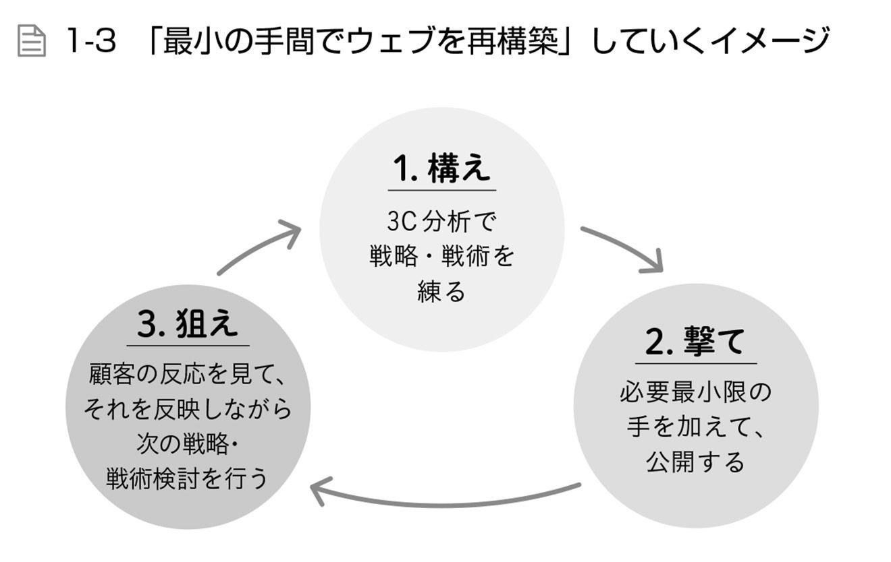
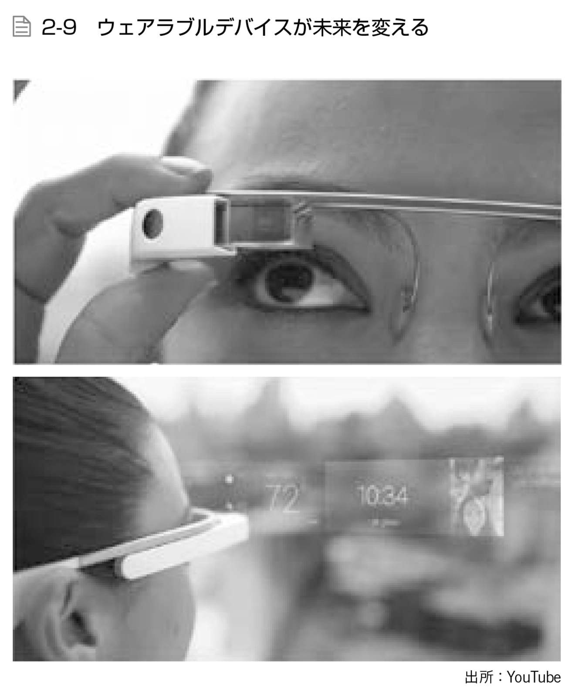
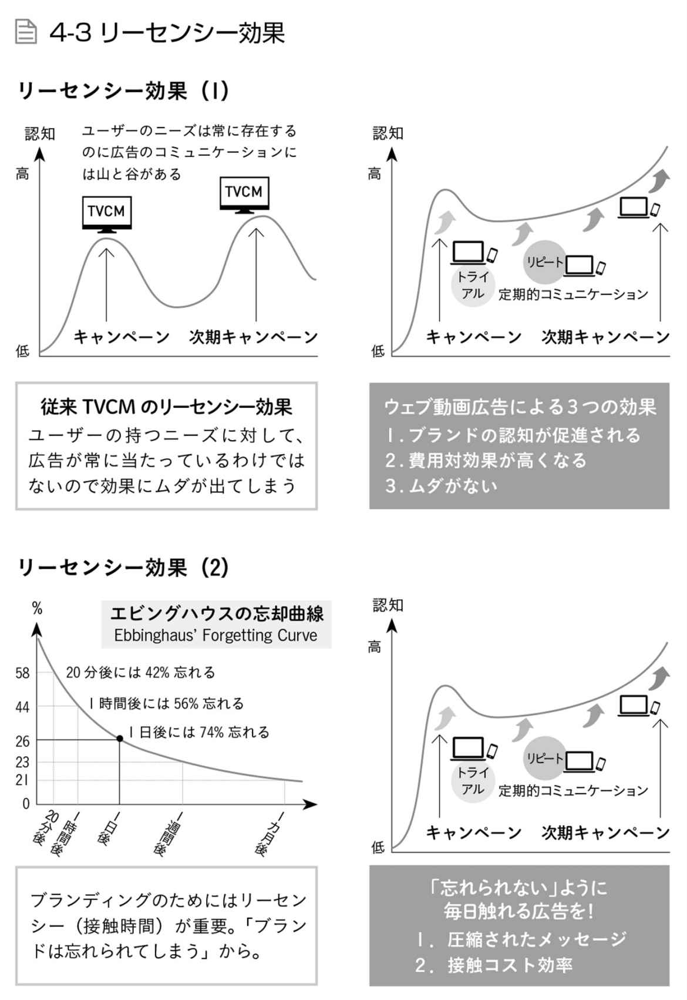

| 「5秒で伝え、共感させる」YouTube広告術 | |
| 徳山 亨 & 野村 勇樹 | |
| (2016) | |
はじめに
この本を手に取られた皆様はおそらく、以下のような悩みをお持ちではないかと思います。
「会社のウェブサイトを作ったけれども、サイトの訪問者がなかなか増えない」
「会社情報や製品情報を載せているだけで他になにを掲載したらいいかわからず、更新頻度もあがらない」
「ウェブサイトで製品をどんどん買ってもらいたいのだけど、なかなか売れない」
「TwitterやFacebookなどのSNSが流行りだからとやってみているが、効果は出ているのだろうか」
「動画広告を使えば効果的だと聞くけど、どうすればいいのか」
今はインターネット全盛の時代。どんな商売や活動をしていても、その内容を広く伝えたり実際に製品を買ってもらったりするために、インターネットの活用は不可欠です。ほとんどの企業はウェブサイトを持ち、あるいはＳＮＳなどを駆使し、会社や製品、企業活動の紹介をネット上で展開しています。
ですが、こういったインターネット上での広報活動はしばしば、その効果が思うようにあがりません。端的に申し上げると、なかなか製品が売れません。
豪華なウェブサイトを作り、製品情報と販売ボタンをサイト内に設置して、製品の魅力を精一杯伝えているつもりでも、思うように売れていないのではないでしょうか。SNSで製品紹介や日常のつぶやきをいくら流しても、製品紹介の動画広告を作って拡散しても、売上がほとんどあがらなかった、という方がおられるのではないでしょうか。
そういった方々のお悩みに応えたい。インターネットにおける広告集客とはどういうものなのか、効果的なマーケティングとはなんなのかを皆様に知ってもらいたい。私たちはこのような想いから、本書を作ることにいたしました。
この本をきっかけに、皆様のインターネット上における企業活動を充実させて頂ければ幸いです。
2016年３月吉日
徳山 亨
野村 勇樹
Contents
Chapter 0
Chapter 1
Chapter 2
Chapter 3
Chapter 4
Chapter 5
1/ 従来広告の弱点を知り、起業へ
私（徳山）は、自分の地元である福井の広告会社に就職しました。その会社は、従来のマスコミ４媒体（新聞、雑誌、ラジオ、テレビ）に関して福井でおそらく最も名前が通っていて、大会社から小さな会社までさまざまな顧客を相手にできる場所です。
主な担当業務は、まだ取引のない会社へ飛び込んで新規に顧客開拓をする仕事でした。テレビ局や雑誌メディアが用意している広告企画案を片手にさまざまな会社の門を叩き、「このような形で御社の広告を打つことができます」と提案してまわる日々を、入社して1年ほど続けました。
ですが、１年も過ぎると、仕事に強い疑問を持つようになりました。その疑問とは、「自分たちの広告企画は媒体目線で作られていて、広告主＝顧客の本当に求めているものになっていないんじゃないか」というものでした。
この疑問について、具体例でお話ししましょう。例えば１～２月の季節は、食べ過ぎで太るのを気にする人が多いだろうという観点から、メディアはダイエット特集の広告企画を顧客へ提案します。あるいは冬にスキーツアー、夏にアイス特集というような、季節に合わせたレジャーや飲食物の広告と言われれば、もう少しご想像しやすいでしょうか。こういった広告を、広告主＝顧客発ではなく、広告代理店やテレビ局などの４マスサイドから提案しているのです。
これは一見、広告主の扱っている製品が時節に合わせて売れるべく支援しているように思われますが、翻せば、広告主の意思とは無関係に、お仕着せの広告提案をしているとも言えます。
広告主が本当に売りたいと考えているものを売るサポートができているのか。広告主とその製品の個性や魅力を伝えるのが、広告の本来の役割ではないのか。疑問は日に日に強くなっていきました。
そこで私は、顧客の元へ「先日打った広告の効果はどうでしたか？」とヒアリングをしてまわるようになりました。その取り組みを始めてから、顧客に言われたことが２つあります。どちらも強烈で、今でもはっきり覚えています。
１つは、「前に打った広告の効果を尋ねにきた代理店の人は、徳山さんがはじめてだ」と言われたことでした。つまり大抵の広告代理店は、広告を提案して作って流したら終わりなのです。広告の効果がどうだったかを知ろうとする代理店や担当者が実は少ないということがわかりました。
もう１つは、私の疑問が正しいことを裏付けてくれたのですが、「自分のお店にピッタリ合う広告企画を持ってきてほしい」というご要望でした。要するに、私の持ってまわっていた提案は広告主の本当に打ちたい広告ではなかったのです。
この事実に気づいてから、私は仕事のやり方をガラリと変えました。テレビ局や雑誌社の「こういう広告企画を売ってきてくれ」というお約束の広告提案企画は、基本的に無視。そうではなく、あくまで顧客＝広告主の望みに沿った広告を作りたいと考えるようになりました。だから広告主とよく話をして、一緒に広告の企画を作り、年間計画を立てながら動く仕事のスタイルになったのです。
結果、私の営業成績は大きく上昇しました。顧客からの評価が良いからこその売上アップです。これは広告主にひたすら媚びた広告を作ったからというわけではなく、一緒に考えて、広告主にとって本当に意味のある広告を作り、それが広告主の製品売上に響いたからです。たくさんの広告主から「あの企画は良かった！」と好評を頂きました。
ですが、私はまだ満足できませんでした。なぜなら、自分の作った広告のなにが良かったから広告主の製品が売れたのか、明確なデータを得られなかったからです。
従来の４マス媒体広告は通常、複数メディアに広告を展開します。同じ製品の広告をテレビやラジオで流し、新聞や雑誌に載せます。その方が単発よりも効果が出やすいからです。しかしそうすると、どのメディアが製品売上に最も影響を及ぼしたのかがわからない。わからないから、結局複合的に広告を打つしかない。これでは顧客への費用負担がなかなか下がりませんし、より効率の良い広告の追究は困難です。
顧客から「徳山さんの広告提案は良かったよ」と言われても、結局その広告が「なんとなく」良かったとしかわからなかったのです。もっと安い、効果のある、ピンポイントな広告提案をすることができず、私はモヤモヤし続けました。
そんな私はある日、「インターネットを仕事にして食べている」という野村勇樹さんと出会いました。
野村さんはインターネットでいろいろな商品を扱い、宣伝し、その商売で稼いでいました。こう表現しただけでは他の商売との違いがよくわかりませんが、ポイントは、「インターネットで」「宣伝し」という部分です。野村さんは、インターネットでたくさんの顧客とやり取りし、彼らの需要を調べ、その需要に応じた製品情報を顧客メーリングリストへ流し、あるいは効果的なウェブサイトを作ってそこへ誘引し、商売を成り立たせていました。
その行動には「なんとなく」の領域がなかったのです。インターネットで得られる情報を全てデータとして扱い、どういう情報にどういう顧客がどう反応するのか、ウェブサイトをどういう経路で訪れるのか、どこでクリックアクションをするのか――そう言った情報を丹念に調べ、次の行動にフィードバックしながら商売を回していく。全てはデータに基づいていました。
これこそまさに、従来の４マス媒体には不可能であり、私がもどかしく感じていたことへの解だったのです。広告のなにに人々がどう反応して、どうやって商品購入に結びついていくのか。４マス媒体では「なんとなく」の領域が多分にあったマーケティング指標が、インターネット上では数値化されることを知ったのです。
インターネットを駆使して情報を扱うノウハウを身に付け、広告主とデータを共有しながら広告提案を実施していくことこそが私のやりたかったことだと浮き彫りになってから間もなくのこと。2013年5月に、私たちはBigmac Inc.を起業しました。
2/ 福井に黒船が来る？
起業当初は、仕事を獲っていくのは簡単ではありませんでした。
前述の通り、インターネットでの広告はその効果を数値化できるのが大きなメリット。ですが、それを理解して提案に乗ってきてくれる顧客が、福井にはまだなかなかいませんでした。インターネット広告に興味はあってもなにをしていいのかわからず、手を出さないという企業がほとんどだったのです。
そのため私たちは、福井でセミナーを精力的に展開しました。インターネットでのマーケティングやリスティング広告に詳しい人を呼んだり、株式会社ALL CONNECT（起業から10年で年商100億円）のようなウェブ販売代行事業をやっている企業とコラボレーションしたりしながら、インターネット広告の仕組みや実例、メリットなどについてセミナーを通じて福井で周知を繰り返し、「インターネット広告をやってみよう」という人を増やしていくことに尽力しました。今は年４回、80～100名程度／回に落ち着いたセミナーですが、当時はもっと小刻みにたくさん実施していました。
インターネット広告に興味を持つ会社は福井で少しずつ増えていきましたが、それでも私たちの仕事はなかなか拡大しませんでした。というのも、広告代理店と広告主の関係は「昔からの付き合い」が重視される世界であり、従来の代理店との継続した広告企画・出稿のサイクルから外へ踏み出せない企業が多かったのです。
このような風習の中で私たちの広告提案に乗ってもらうために、私たちは"資格"の獲得に注力しました。「昔からの付き合い」がないならば、それと拮抗するだけの箔をつけたかったのです。中身のない箔は意味がありませんが、私たちには、インターネットを駆使した従来とは全く違う広告を提案したいという想いがある。それを理解し、使ってもらうために、私たちはなんとしても進出したかったのです。
具体的にはどうしたか。それは、GoogleやYahoo!といったインターネット広告のオーソリティーから認められる存在になることでした。Googleの場合、審査に通らねばなりません。Yahoo!であれば、認定されるだけの売上を立てねばなりません。我々は会社設立１年目でまずこの課題をクリアし、GoogleとYahoo!の正規代理店になりました。
私たちは福井に突如現れ、GoogleやYahoo!の正規代理店としてインターネット広告の魅力を伝えてまわり、セミナーを開催し続けました。従来の広告代理店に比べて後発であり、かつ認知の薄いインターネット広告を提案する私たちは、いわば鎖国している福井にやってきた黒船のような存在でした。
反発ももちろんありましたが、新しいことを根づかせるために障害はつきものです。私たちは後発で「昔からの付き合い」のない存在だったがゆえに、インターネット広告に関する周知を一歩一歩丁寧に続けました。
インターネット広告はまだまだ新しいものです。しかも、他の４マス媒体と違って形がありません。テレビで流す映像や雑誌に掲載する広告などのように実態が明確に存在するものに比べて、インターネットでの広告提案には、実態をイメージしづらい手法が多くあります。どのような広告になり、効果があるのか、それを信用してもらうのが序盤に立ちふさがるハードルでした。リスティング広告やバナー広告の画面キャプチャ画像を顧客１社１社へ送って説得するといった地道な活動を続けました。提案に乗って広告を使ってくれた1社1社へは結果にコミットし、成果で応えていきました。
おかげさまで今では、福井や地方都市で多くの実績を作ることができました。ですが、まだまだこれからです。１社でも多く、全国の会社の力になりたいと考えています。その想いをよりたくさんの人に届けようと思ったのが本書出版の背景です。
3/ 福井から全国、そして世界へ
起業に思い至ったくだりで触れましたが、私たちがインターネット広告に着目したのは、広告の効果を数値化し、細かく分析することができるからです。これは従来の４マス媒体広告に最も足りなかった要素であり、だからこそ４マス媒体はクロスメディアに広告を打つしかなかった。
インターネット広告は、大昔から商売と供にあった広告の歴史において、革命なのです。私たちはそれを理解し、皆様とデータを共有し、最適な広告企画を提案することができます。
今、私たちの最も重要視しているインターネット広告手段の１つがYouTube広告です。
YouTube広告は、2014年頃まであまり注目されていませんでした。なぜなら、細かい広告配信の設定ができず、大雑把に表現するならば、「なんとなく」テレビCMのように動画広告を打つしかできなかったのです。
しかし2014年にその機能が大幅拡張され、どのようなユーザーに対して、いつ、どれだけの予算をかけて、どんな動画をどう配信するのかというのが詳細に設定できるようになりました。そのフィードバックも、子細に至るまでデータを受け取って確認することができます。この背景にはもちろん、Googleが推し進めている全世界ユーザーのビッグデータ解析と活用もあります。この辺りの詳細事情については、本書で順次触れていきます。
YouTubeに着目する理由がもう１つあります。それは、今の若者には時間がないということです。
一昔前のテレビが最も進んだメディアだった時代には、みんなテレビを観ていました。夜７時～８時の時間帯には帰宅してお茶の間でゆっくりテレビを眺め、その時間はゴールデンタイムと言われていました。インターネットがなく、夜遅くまで仕事ができるような環境が今ほど整っていなかったのも理由かもしれません。
ですが、今は違います。ゴールデンタイムという時間を意識し、その時間にテレビをいつも観ている人がどれだけいるでしょうか。現代では、夜遅くまでどこでも仕事ができます。海外と関わる仕事が増え、昼夜にとらわれない働き方を求められている人も少なくないでしょう。働いていない若者も、SNSなどを通じてあらゆる時間帯に誰かと交流できる時代です。
決まった時間にテレビをゆっくり観るような生活から人々は縁遠くなりました。このような現代において、人々が観たい番組、情報をどうやって得ているのか。それはYouTubeのような、放送時間に縛られない、隙間時間に視聴できるインターネット動画配信サービスからです。YouTubeは今の時代に適合した、いわば"次世代のテレビ"なのです。
現代人が閲覧するのに適したYouTubeへ広告を意のままに出稿できて、しかもそのデータを得られるサービスが使えるようになった。
YouTubeがここまで進化したのは、広告業界にとってディープインパクトです。
YouTube広告をやっているかいないかで、数年もすれば、大きな違いができてしまいます。なぜなら、現代人の新たなテレビとしてたくさんの人が視聴し、そういった視聴者のデータが集約されているYouTubeでデータを参照しながら広告を打ちながら商売をしていくということは、すなわち、世のニーズを常に俯瞰しながら動いているということになるからです。それをやらなければ逆に、動き続ける世の中から置き去りにされてしまいます。
本書は、コンサルティング会社としての経験とノウハウを整理し、皆様が最適な広告を打てるお手伝いができるようにという想いで書きました。１社でも多くの会社に広告のことを知ってもらい、ご縁があるならば直接ご支援して、皆様の企業活動促進に繋げていって欲しいと思っています。
私たちのミッションは、以下の言葉に集約されます。
Move the heart advertising.
－広告の力で心を動かす－
広告というサービスを通じて、顧客・従業員・社会の人たちの心を「広告」というマーケティング手法で動かし、関わる人たちを豊かにすることを使命としています。
常にクライアントの立場で考え、「知ること」を大事にし、小手先の手法ばかりではなく、クライアントやエンドユーザーがなにを求め共感するのか、そういった本質の追求に心血を注ぎます。
本書からなにかを感じて活かして頂けるならば、それだけで幸いです。
そしてもし直接お手伝いさせて頂ける機会があるならば、あなたの企業活動を今より豊かにすることをコミットいたします。
1/ YouTube広告の前に、あなたの会社のウェブ戦略を点検
YouTube広告と聞くと、「おっ、新しくて良いもの？」と思われるかもしれません。
序章で述べたように、YouTube広告は2016年現在で比較的新しい流行の形態ですが、「新しく流行りのもの」＝「良い、やるべき広告手法」だということは必ずしもありません。
今までにも、ブログが流行ったりTwitterやFacebookといったSNSが登場したりするたびに、たくさんの人や企業が流行を取り入れてきました。そしてうまく効果を出した人もいれば、全然効果が出なかったという人もいたでしょう。
新しいものや流行のものは、決して魔法ではないのです。
大事なのは、新しい手段や媒体の特性を理解し、それを使って自分や会社がなにを伝えたいのか、誰に伝えたいのか、どうしたいのかを明確にすること。そうすることではじめて、あなたは「新しいもの」を使いこなし、魔法とすら錯覚するような効果を得ることもできるでしょう。
あなたの会社が広告を使ってなにをしたいのか。その根っこには、あなたの会社の明確な「戦略」や「戦術」がなければいけません。あなたは自社の戦略や戦術について問われたら、答えられますか。
「戦略」は、山登りに例えられます。どの山を登ろうとするのか、なぜその山を登るのかを考えて決めるのが戦略です。初心者が標高の低い山に登る、慣れてきた人が富士山に挑戦する、あるいは世界に名を馳せる登山家がエベレスト登頂に命を懸けるなど、人それぞれでしょう。
そして、戦略の下層には「戦術」があります。山登りならば経路や移動手段、装備品の選択が戦術にあたります。山頂に至るまでにいくつものルートがあり、楽だけど時間のかかる道や険しいけれど短時間で済む道、途中で絶景を楽しめる道などがあるでしょう。また、全て徒歩で行くのか、途中まで車を使うのか。装備品や携行する飲食物も、状況によってさまざま。

会社の戦略や戦術も同じです。あなたの会社は、今どういう状態にあり、次はどうなるのが目的か、どういう成果を出そうとしているのか。そのための手段としてなにをやろうとしているのか。
これを料理屋で言い換えるならば、なにを食べられる店にするかが戦略です。中華なのかフレンチなのか、高級レストランなのか独身男性向けの定食屋なのか。この戦略が決まれば、それをどうやって食べてもらうのかという戦術も方向性が定まります。店構えや料理の価格、広告を出す媒体や広告の内容が戦術にあたります。
このように、戦略をしっかり決め、それに従って戦術を定めていくことが必要なのです。
本書のタイトルにも含めている「YouTube広告」は動画広告の手段であり、この「戦略」「戦術」の末端を担う手段のひとつでしかありません。
あなたが「動画広告って良いんじゃないか？」と着目したのは鋭いです。今の時代に流行っていて、使い方次第で大きな効果が得られます。ですが、そのためにはまずあなたの会社の「戦略」「戦術」を明確にする必要があります。それらを踏まえつつ動画広告を活用してはじめて、戦略や戦術の末端で大きな威力を発揮し、あなたの会社の目的を達成する追い風になるのです。
本章の題は「あなたの会社のウェブ戦略、大丈夫ですか？」としました。「ウェブ戦略」としたのは本書がインターネットやYouTube広告をテーマにしているからなのですが、「あなたの会社の戦略」について考察する場合、ウェブだけ特別ということはありません。なぜなら企業活動における戦略は必ず、「顧客を知ること」「競合他社を知ること」「自社の強みを知ること」によって決まるからです。ただ、戦略を検討する手法としてウェブならではのやり方があります。詳しくはこの後で述べます。
では実際に、あなたの会社の戦略を点検してみましょう。「３Ｃ分析」というものがあります。
Customer ：顧客、市場環境
Competitor ：競合、ライバル
Company ：自社の強み、立ち位置
最初のCustomerは顧客を意味し、顧客の好みやニーズ、流行、あるいは市場環境を知ることを指します。ウェブ全盛時代の今では、インターネットを駆使した顧客動向の把握が非常に有効です。例えば、「Yahoo! 知恵袋」や「教えて！ グーグル」「発言小町」などのようなＱ＆Ａサイトや口コミサイトを眺めると、顧客の生の声を閲覧できます。どういう製品がウケてるのか、どんな不満や疑問があるのかがわかるだけではなく、顧客の間で使われている流行の言葉や略語なども知ることができます。もちろんネットで調べるだけではなく、実際に顧客と接している従業員や営業担当などの現場を知る人間にヒアリングすることも効果的です。自社の電話応対センターの会話ログなども聞いてみれば、さまざまなヒントが転がっています。
次のCompetitorは競合他社を意味します。例えば、自社とＡ社が同じようなジャンルの服を扱っているとします。ここでオススメなのが、自社とＡ社の比較表を作る手法です。扱う品数、価格帯、通販の送料、納期、梱包手段、チラシ等の宣伝方法、電話応対、アフターサービス......いろいろな観点でなにが特徴なのか、勝っているか劣っているかなどを書き並べて見える化すると、自社の強みや弱みが浮き彫りになります。
Ａ社の情報収集をする場合、ときにはＡ社の製品を実際に購入したり、客を装ってＡ社のサービスセンターへ電話をかけて電話応対の品質を見たりするなども有効でしょう。
具体的に他社の情報を集めて自社と比較することで、自社のことが本当の意味で見えてきます。この取り組みで見えた自社の強みは、他社にない特長としてもっと伸ばし、かつアピール材料にする。他社に劣っていた部分は、他社と同等程度までは引き上げるなど、対策を打ちましょう。このように、自社の課題解決や改善をすべく自社と他社を比較、分析するプロセスをベンチマーキングと呼びます。
３つ目のCompanyは、文字通り自社のことです。Competitorと比較分析して得られた自社の特徴、伸ばすべき部分、補うべき部分。それらをしっかり認識し、的確な改善策を取っていきましょう。
この「３Ｃ分析」は、一度やったら終わりではありません。顧客のニーズも市場の情勢も日々変化します。定期的に実施し、今自分の会社はどういう立ち位置にあり、次はどんな手を打っていけば良いのか。３Ｃ分析をもとに戦略と戦術を常に見直しながら、企業活動を行っていかねばなりません。孫子の兵法にも「彼を知り己を知れば百戦殆 うからず」とあります。３Ｃ分析はそれと同じことです。彼我の状況を常に把握しながら動いてはじめて、あなたの会社の戦略は盤石なものとなるのです。
あなたの会社の戦略は大丈夫でしょうか。顧客はなにを求めていますか？ 会社の強みや弱みは明確ですか？ 次の目標はなんでしょうか？ 本書を片手に、簡単にで構いませんので「３Ｃ分析」をやってみてください。
2/ どうすればウェブで成果をあげられるか、なにから着手すべきか
３Ｃ分析を実施してあなたの会社の戦略を考察したならば、既にあなたは、顧客がなにを求めているのか、それに対して自社はなにが優れているのか、劣っているのかがわかるはずです。
そこまで来ているなら、「どうすればウェブで成果をあげられるか？」の答えは簡単です。顧客の求めている状態へ近づくように自社のウェブでの活動を改善していけば良いのです。
ウェブで既に好評な要素があるならば、更に良くして競合に差をつけて、それをあなたの会社独自の魅力にしましょう。不満の聞こえる要素がある場合、それが競合他社に劣っていれば、顧客にマイナス面と評価され、せっかく良い品物を扱っていても相手にしてくれないかもしれません。すぐにマイナス面は改善しましょう。インターネットでの取り組みを既になんらか実施しているならば、ウェブ経由の製品売上はもちろん、アクセス数やクリック数によってなんらかの指標があるはずです。
では、具体的にどこから手をつけていけばいいか。それは、３Ｃ分析によって見える自社の強みや弱みに手をつけるのがウェブでも定石です。中でも弱みにあたる部分、自社のマイナス面の改善から着手すべきでしょう。
例えばマイナス面の事例として、クレジットカード決済を使えない通販のウェブサイトを持っていたとします。顧客はウェブサイトで全ての注文作業を終えたいのに、注文したあとに銀行振込をしなければならなかったり、商品到着時に代金引換による支払いが必要になったりすると、億劫に感じます。クレジットカードを常用している顧客なら他のサイトへ行ってしまうかもしれません。どんなに良い商品を安く扱っていても＝即ち強みを持っていても、致命的な弱みがあると、全てを台無しにしてしまう可能性があります。
他の事例として、ウェブサイトの動作が極端に遅い、デザインが拙くてサイトの情報が見にくかったりわかりにくかったりするというケースや、中小企業の社長が購入を検討するような製品を扱っているサイトなのにデザインが洗練され過ぎていて、不評という話を聞いたこともあります。あるいは、伝統ある和菓子屋が洋菓子も扱い始め、お菓子がなんでもかんでも載っているサイトになった結果、伝統ある雰囲気が薄れて逆に注文が減ってしまったということもあります。
マイナス面を見つけた場合は、できるだけ早く対応しましょう。また、闇雲に要素を増やしてプラス面、強みを殺してしまうこともあります。自社の強み、弱みをしっかり認識し、的確な手を打つように心掛けましょう。ウェブサイトは改善点が見え次第、すぐに修正や変更ができます。
ウェブサイトに話が偏りましたので、他のウェブ媒体に話題を移してみましょう。
例えばインターネット上のショッピングモール（楽天市場など）に出店して売るというのもやり方のひとつで、メリット・デメリットがあります。メリットは、サイトを作る手間がなく楽に売り場を持つことができたり、ショッピングモールのリピーターがいるために集客が比較的容易であったり、売買の決済を仲介するシステムをモール側が用意しているなどです。
デメリットとしては、モール内出品サイトのデザインにはある程度制約があること、あくまで「モールの中の１店舗」とみなされてしまい、そのお店そのものの知名度アップになかなか繋がらないこと、モール側に手数料を払わねばならないなどの点があります。
ショッピングモール以外にも、マッチングサイトに登録して顧客を引き寄せたり、SNSを使って顧客へ直接アプローチしてウェブサイトへの来訪を促したりするなどの方法があります。
ただ、ショッピングモールに登録していたとしても、マッチングサイトやSNSで顧客を呼び寄せる場所としても、自前のウェブサイトを持っていることが大変有効でしょう。
一方で自前のウェブサイトは、詳しい製品紹介や会社紹介を展開する、情報やサイトの雰囲気によってブランディングするなど、さまざまな機能と効果を持つことができます。将来的にどうなるかわからないショッピングモールやSNSよりも、自分でデータや内容や顧客リストを管理し、資産を残していけるという意味でも、ウェブサイトをオススメしたいと思います。
ちょっとした余談ですが、SNSでのアプローチは、リアル店舗へ顧客を呼び込むのに強いケースがあります。例えば花屋さんがTwitterで、「バラの花言葉は『愛』『美』です。これを店頭でおっしゃって頂くと、本日はバラを１割引で販売いたします！」とつぶやいて、それを見た人が実際にバラを買いに来たとすると、SNSの効果が文字通り体感できますし、そこで店員と顧客の交流が生まれ、リピーター獲得にもつながりやすくなります。
自分の会社の目的や商売、すなわち戦略と戦術に応じて、優先的に打つべき手段も変わってくるのです。
ではここで皆様へのおまけとして、会社のウェブ制作担当者が忘れがちな点、失敗しやすい点をまとめた「あるあるチェックシート」を掲載します。たくさんチェックがつく場合は要注意。実際にウェブサイト制作などに関わっておられる方は、試しに確認してみてください。
▼SEO対策やサイトデザインに関して
□1.サイト内各ページのタイトルタグが適切に設定されていない
・ページ内容に合ったタイトルになっているか。
・全ページをチェックすること。
□2.ディスクリプションが設定されていない
・Google検索時に、タイトルタグ下の紹介文として表示される文章は書かれているか。
・ない場合、これを全角100文字程度で設定すること。
・タイトルタグや想定できる検索キーワードとのマッチ性も確認のこと。
□3.リンク切れがある
・Googleがサイトを見まわる際、リンク切れがあると評価が落ちる。チェック必須。
□4.画像に説明（ALT属性）が入っていない
・ALTタグで画像に説明文を入れているか。Googleは画像に説明があるかを見ている。
・画像説明を入れることで、Google画像検索などにもヒットする。
□5.コンテンツに不備がある
・誤字脱字がないか？ 読みにくい文章や間違いはないか。
・表現を工夫し、箇条書きなどもうまく使って、読みやすく、やさしい文章になっているか？
・既存ページのコピー＆ペーストで新しいコンテンツを作ったときも要注意。
※上記１～５にチェックがつく場合は、SEOの知識を拡充しましょう。
▼ウェブサイトの機能面・解析面に関して
□6.入力フォームや注文カートなどが正しく動作していない
・必ず担当者がテスト注文をしてみること。自動返信メールも適切な文章となっているか要確認。
・PCだけではなくスマートフォンの小さい画面環境でも併せて確認すること。
□7. Googleアナリティクスを導入していない
・アクセス解析ツールを導入しないと、サイト運営の改善がままならない。
・Googleアナリティクスを設置したら、リアルタイム解析で反応を見て確認すること。
□8. Googleサーチコンソールを導入していない
・Googleでの登録（インデックス）状況やキーワードの把握をできる重要なツールが入っているか確認すること。
・Googleサーチコンソールを設定すること。
□9.スマートフォンやタブレットからだと見にくい
・完全スマホ対応が望ましい。若者や女性向けのサイトはスマホ対応必須と言えるし、今後は一層スマートフォン中心となる。スマホユーザーからどう見えるかをチェックすること。
□10.ソーシャルメディア（SNS）を用意していない
・現在ではFacebookやTwitterなどSNSからの流入が無視できない状況になっている。
・公式Facebookページは最低限作り、定期的に情報発信すること。投稿ルールは簡単でもいいので統一して決めておくこと。
□11.セキュリティ対策の対応をリストアップしていない
・情報漏えいしないためのルール作り。
・セキュリティ関連サイトをお気に入りにまとめておく。
・システムアップデートすべきものをまとめておく。
・保守・サポートの連絡先を一覧化しておく。
□12.管理画面やアクセス解析などよく使うページをお気に入り登録していない
・日々の作業効率化のためにも、頻繁に閲覧するページをお気に入り登録（ブックマーク）すること。アクセス解析を毎日見て、いつもの数字（平常値）を体感的に覚えこんでおくことは重要。
□13.更新や予算スケジュールを作っていない
・３カ月計画など無理のない範囲で、更新や予算スケジュールを立てておきたい。
※上記6～13にチェックがつく場合、ウェブサイト運営や解析の知識を拡充しましょう。
3/ 最小の手間でウェブを再構築する
前項では「ウェブサイトは改善点が見え次第、すぐに修正や変更ができる」と述べました。ウェブは、旧来のメディアと違って、制作や変更とその公開がすぐにできるというのが大きな魅力です。
そのため、会社でウェブ戦略を立てたならば、まずその戦略の目的＝ゴールから逆算してサイトを作るなどすればいいのです。例えば新しく会社や企画を立ち上げていて、まず知ってもらうのが目的ならば、最低限の主要な情報だけを載せたウェブサイトを作り、広いターゲットに訴求するのも良いのです。新製品発売前に、あえて断片的な情報をもったいぶったようにして見せる「ティザーサイト」という手法がありますが、これが良い例です。
このように、まず始める。そして公開しつつ、少しずつ情報や機能をサイトに足していきながらまわしていく。この際に、サイトを見た人の反応や評判をチェックして、それを参考にしながらサイトを更新したり、あるいは開発中の製品に反映していったりなどをしていきます。
もしウェブサイトを公開前にガッツリと作り込み、思いつくかぎりの情報を満載してから公開すると、もしかしたら訪問者の興味がない情報ばかりを載せてしまっているかもしれません。あるいは、用意した製品は顧客ニーズから的外れなものになっている可能性もあります。せっかくウェブを使っているのに、これではウェブの特性を生かしきれていません。
よく銃撃の動作を「構え、狙え、撃て」と言います。これは、初撃で命中させることを目的としていて、通常の仕事においても応用できる思想でしょう。ですがウェブでは次弾を撃つのを最初から想定して、「構え（＝３Ｃ分析など戦略立て）、撃て（＝まず始める）、狙え（＝修正）」と動くべきなのです。ここでいう『撃て』は、全力で撃って息切れしてはいけません。その後に修正して撃つ、また修正して撃つを繰り返し、少しずつ命中させていく。これこそが、最小の手間で最大の効果を得るウェブのやり方であり、ウェブ戦略のあるべき形なのです。

このウェブ再構築のループを実施するにあたって大事なのは、「構え」や「狙え」の段階で数値的に明確な目標を持っていることです。さきほど「立ち上げた会社や企画を知ってもらうのが目的」という例を挙げましたが、残念なことに７割の会社は「サイトを作り終えたら目標完了」としてしまっているようです。これではいけません。そのサイトでなにをどうしたいのか、明確な目標がわかりません。
そうではなく、例えば「ウェブサイトのTopページの訪問者を1000人／月にする」とか、「サイト内の問い合わせボタンクリック数を100人／月にする」「問い合わせメールを10件／月以上」といった明確な数値目標を立て、それを達成するために工夫をしていくということが必要です。
このような数値目標を表す概念として、以下の２つがあります。
KGI（Key Goal Indicator）＝重要目標達成指標
KPI（Key Performance Indicator）＝重要業績評価指標
KGIが「結果」を見据えた指標であり、KPIは「過程」を評価する指標です。
さきほどのサイト訪問者の例であれば、「今月末までに1000人達成する」のはKGIです。それに対し、「今月末までに1000人訪問を目標にしつつ、毎日30人以上の訪問者獲得があるかを観察する」のがKPIです。
大きな目線では毎月のKGI達成有無を見る。小さな目線では毎日のKPI状況を見て、もし日々の状況が芳しくなければ、サイトに手を加えたり、SNSでの告知を増やしたりしてみます。それでも月の終わりにKGIがまだ目標とかけ離れているならば、公開している情報や製品の特徴を修正していくなどしていく。これがKGIとKPIの考え方です。
例が少し単純でしたが、より一般的には、KGIには半年～１年単位での目標を設定します。例えば「サイトでの年間の売上1000万円以上達成する」をKGIとして、KPIには「日々のサイト訪問者数に対する注文者数を１％以上にする」などを設定し、あるいはそれとは別に月ごとのKPIも設定するなどして、日々や月々のKPI達成有無を見つつ調整を繰り返していき、年の終わりにKGI達成有無を見るのです。このように具体化した指標で効果を測りながら、「構え、撃て、狙え」のサイクルをまわしていきましょう。
いろいろなお客様のウェブ担当者の方にお話を伺うと、KGIやKPIを設定することがなかったり、設定していても、日々の業務に追われて、KPI観察による改善サイクルをウェブ戦略に反映できていなかったりという声をよく聞きます。
本当に大事なのは、３Ｃ分析のくだりでも述べたように「顧客を知ること」です。常に顧客の動向へ目を向け、そのフィードバックを反映していきましょう。
4/ ウェブマーケティング最前線
ウェブの技術は日々進化しています。黎明期は、ただ表示したい広告をどこかに掲載するだけで、要は街中の広告やチラシのように、ウェブ上で宣伝を出すものでした。
しかし、今は違います。検索広告やバナー広告（ディスプレイ広告）といったものが、最先端の技術を駆使して興味ある顧客の目に留まるような工夫が凝らされています。以下の広告について、１つずつ触れていきましょう。
1）検索広告
2）バナー広告（ディスプレイ広告）
3）ステルスマーケティング（ステマ）、記事広告
4）バイラルメディア
5）動画広告
1）検索広告
Googleなどの検索エンジンでなにかキーワード検索をしたときに、その検索結果と一緒に表示される広告です。例えば「京都観光オススメ」というキーワードで検索すると、京都の観光紹介サイトやブログなどへのリンクが検索結果にあがってくるでしょう。それと同時に、検索結果の合間に「京都で泊まるならココ！ 癒やしの宿」というようなリンクがあるのをご覧になったことがあると思います。これが検索広告です。このリンクをクリックすると、京都の宿を予約できるサイトへ飛ぶはずです。この閲覧者は、観光地を検討するついでにこの広告経由で宿泊場所を確保するかもしれません。
すなわち、なにか検索した人に対して、その検索キーワードなどをヒントにその人が興味ありそうなジャンルの広告を表示しているのです。
2）バナー広告（ディスプレイ広告）
これは名前の通り、バナー＝画像による広告で、ブログ記事の最後やSNS画面の端っこ、その他いろいろな場所に表示されています。ウェブを日々使っている方なら、「なんだこの広告、ウザいなあ」と思ったことがあるはずです。ですがこのバナー広告は、ただ嫌がらせのように無作為に表示されているわけではありません。そうではなく、サイトやブログ閲覧者の興味関心に近いジャンルの広告が表示されているのです。よく、「次に買うパソコンについてネットでいろいろ調べていたら、パソコンの広告ばかり表示されるようになった」「広告を見たら、同じような広告ばかり出るようになった」というご経験があるのではないでしょうか。場合によっては、その広告からお得な商品を知って購入に至ることもあるかと思います。
検索広告はキーワードに基づいた比較的単純な仕掛けによる広告表示なのに対し、バナー広告は、パソコンでウェブを閲覧している人の興味関心や最近の閲覧動向を記録し、属性分けし、それに従った広告が表示されるようになっているのです（表示広告のパーソナライズ化）。このような閲覧者の特性に応じて、まるで追いかけるかのように表示される広告を「リマーケティング広告」または「リターゲティング広告」とも呼びます。この技術では、閲覧者個々の属性に基づいて判断するだけでなく、「商品Ａを買った人と似たような行動を普段ウェブで取っている人たちへ、商品Ａの広告を出す」というやり方もできます。
なお、バナー広告は全てパーソナライズ化に基づいて表示されているわけではなく、ときには広告主が大きな予算を投じることで、優先的にその広告が表示されるようにしていることもあります。この辺の仕組みについては、第２章以降で触れます。
3）ステルスマーケティング（ステマ）、記事広告
ステマという言葉はよく聞かれると思います。言葉の意味そのままに、「消費者にそれと気づかれずに広告を打つこと」です。いろいろな手法があり、記事広告もその一種と言えるでしょう。
例えば、映画やアニメーション作品の中で、主人公がいつも同じ缶ジュースを飲んでいたとします。視聴者は知らずのうちにその飲み物に興味を持つのではないでしょうか。そして、同じ缶ジュースを街中で見かけたら、「あ、あのキャラクターが飲んでいたヤツだ、飲んでみようかな」と買うかもしれません。これがステルスマーケティングです。こういうケースでは、その映画などのスポンサーに缶ジュースの製造会社がいるはずです。
あるいは、敏腕ライターに自動車に関する興味深いウェブの記事を書いてもらうよう依頼し、その記事の中で特定の車を好意的に書いてもらうようにする（嘘はいけません）。すると、その記事そのものが面白いために閲覧者が増え、しかもその閲覧者たちはその特定の車に興味を持つのではないでしょうか。こういった記事には、記事の書き手の意思だけで偶然なにか特定の製品がアピールされていることもありますし、スポンサーが対価を払って意図的にそういう記事にしてもらうこともあります。意図的に行われる記事は記事広告であり、ステルスマーケティングの一種と捉えることができるでしょう。
記事広告で最近多いのは、アフィリエイト（成功報酬型広告）です。ブログなどで自分の買った製品を良いところを紹介し、商品販売ページへのリンクを貼る。そしてそのリンクから商品購入者が現れた場合、売上の一部がブログを書いた人へ還元される仕組みのことを言います。
4）バイラルメディア
バイラル（Viral）とは「ウィルス性の」「感染的な」という意味で、「バイラルメディア」とは、SNSなどが持つ情報拡散力を使って、インパクトのある動画や画像、記事で閲覧者を爆発的に集めるようとするメディアのことを指します。
このメディアが掲載している動画や画像、記事そのものにはあまり意味はありません。ただ刺激的で面白く、たくさんの人が思わず共有、拡散したくなる内容ならばいいのです。そうやって、たくさんの人にまるでウィルスが感染するかのように広まるメディア。その記事の中には、必ず広告が仕込まれています。そして、その広告収入によって、こういったメディアは運営されているのです。
バイラルメディアの基礎は、2006年に立ち上がった「BuzzFeed」が基礎を作ったと言われています。「バズる（Buzzる）」という言葉を聞かれたことがあると思いますが、「Buzz」は蜂がぶんぶん飛び回っている音や状態を指し、ネットで口コミなどが盛り上がって騒がしくなっている状態を指しているのが語源です。「BuzzFeed」の名前の由来も同じでしょう。
5）動画広告
最後に、本書のテーマにもしている動画広告です。YouTubeやニコニコ動画など、今は無料で閲覧できるいろいろな動画サービスがありますが、なにか観たい動画を再生する場合、始まる前に数秒間広告の動画が挟まれるのにお気づきかと思います。５秒間はスキップできない映像がそれです。
どんな動画広告が再生されるかには、2）バナー広告で触れた「パーソナライズ化」の仕組みが使われています。あなたの日々の検索動向やサイト閲覧履歴、あるいは動画閲覧履歴から、興味のありそうな広告が選別されて表示されるようになっています。
動画広告は、５秒間スキップできない。観たい動画があるのに待たされるのは苦痛であり、この広告は大抵がウザいものです。ですが、その５秒間で閲覧者に「あれ？」「おっ」と思わせ、うまく閲覧者の心に残ることがあります。あるいは５秒過ぎたあとも動画に観入らせ、最後まで視聴してもらうこともあります。動画広告をうまく使うことで、そういったことが可能になるのです。この点も、第２章以降で触れていきます。
広告は、本来ウザいものです。ですが、アフィリエイトや記事広告の項で述べたように、広告を掲載することによって利益を得るメディアの使い手がいます。広告によって購買行動が発生すれば、広告主は当然嬉しいです。そしてそれは市場の活性化に繋がります。そのために、視聴者や閲覧者がより自然に、気がついたら広告を眺めている、あるいは楽しんで広告を見てしまうような、さまざまな手法が日々開発・考案され、皆様の日常で展開されているのです。
将来的には、GoogleグラスやApple Watchのようなウェアラブルなデバイスがどんどん進化していき、メガネの視界の中にあなたが欲しいと考えた商品の広告が入ってくる時代がくるかもしれません。身体につけたデバイスで健康状態を把握し、体調が悪くなったら薬や病院の広告が出るようになるかもしれません。
5/ 勝ちパターンの動線とは？
勝ちパターンを作るということは、あなたに勝ちをもたらす顧客をそれだけ獲得するということを意味します。それだけの顧客を獲得するためには、本章前半で触れてきたように、３Ｃ分析を実施して顧客のニーズや動向と市場を知り、あなたの会社の強みと弱みを知ることが必要です。そうすることではじめて、勝ちパターンに至る動線が見えてくるのです。
簡単な考え方を申し上げるならば、①３Ｃ分析で顧客や市場の求めているものを把握し、②ライバルの強みを避けつつ、③自社の強みを生かしながら顧客の欲するものを提供する。①～③をなぞるようなストーリーを思い描ければ、それが勝ちパターンの動線になります。
具体例を申し上げましょう。福井県でなにか物を売る商売をしているとします。例えば、全国へ向けて大々的にウェブや紙媒体などで広告を流したとしても、お店が福井なので、都心部に比べるとなかなか人はやってきてくれないでしょう。低価格で服を提供できる大手にもネット通販では簡単に勝てないはずです。そのため、ウェブその他の広告を福井やその近辺に絞って発信すると、コストを抑えつつお店に興味を持つ顧客へ情報を届けることができます。これが、都心部や大手のお店とは違う場所で勝負をする＝他社の強みを避けるということです。
自分にとっての顧客がどこにいるのか、顧客はどういった年齢層なのか、その層に情報を届けるにはどういう手段がいいのか。それを考えていきましょう。
リアル店舗での商売が中心なら、全国に広告を出すより近辺に絞った方が得策です。ネット通販だけならば広範囲へ伝えた方がいいでしょう。扱っている商品が若者向けの服ならば、その年代を意識した場所に広告を打つべきで、新聞などよりもTwitterやFacebookなど若い人が閲覧している可能性の高いSNSを活用した方がいいかもしれません。Instagramならユーザーの７割が女性なので、女性向けの商品はそういった場へ広告を出すなどすれば効率が良いでしょう。前項で述べたバナー広告などの「リマーケティング広告」を使って近い顧客層へ繰り返し訴求すると、広告の効果が高まります。
ただし、新聞やテレビで広く無作為の年齢層へ広告を打つのは、若者の親の世代にも広く認知してもらって（ブランディング）若者の購買行動をさりげなく後押ししてもらうような効果もあるため、広範囲へ広告を打つ意味はまた別にあります。この辺りの話題は、第２章以降で詳しく触れます。
少し話題を変えて、ウェブにおける効果的な動線の作り方について触れます。
本書の「はじめに」でもあげましたが、会社のウェブサイトを作って商品販売を始めたものの、訪問者が増えない、人が来てもなかなか買ってくれない、とお悩みの方がおられるのではと思います。それはもしかしたら、顧客を自社サイトまで導き、買ってもらうまでの動線づくりがうまくできていないのかもしれません。
効果的な動線はどうすれば作れるのか。１つ１つ順を追っていきましょう。
ほとんどの人が、ゴールは商品を買ってもらうことでしょう。その商品販売ページが自社ウェブサイトなりウェブショッピングモール内の販売ページにあるならば、そこへ顧客を導かねばなりません。いきなりサイトへ辿り着いてもらえればいいのですが、なかなかそうはいきません。だから、SNSやブログを使って自社の製品や活動を紹介して興味を持ってもらう。例えば、花屋さんが季節の花の写真とその花にまつわる小話などをブログで定期的に公開していれば、花に興味のある人が閲覧してくれるかもしれません。あるいはバナー広告などを出して、興味を持ってもらえそうな人の目に広告が触れるようにする。こういったアクションをしないと、ただサイトだけ作ってもなかなか人は来ません。
次に、SNSやブログなどによって誰かが興味を持ってくれて、いざ顧客がウェブサイトを訪れたとします。せっかくサイトに来てくれましたが、いきなり「商品Ａがｘｘｘｘ円です！」と販売ボタンや写真だけ並んでいても、なかなか買ってもらえないのではないでしょうか。ご自分がサイトを訪れる側だとして想像してみてください。
ここで、ウェブサイトの販売ページの具体的な作り方について書きます。よく「クエスト方式」と呼ばれている手順で、テレビショッピングなどの番組構成を思い浮かべて頂ければわかりやすいと思います。
こういった流れを意識しながらウェブサイトを作るのです。
「ランディングページ」（Landing Page、LP）という言葉をご存じでしょうか。もともとは、その名の通り着地するページ＝ＳＮＳなどで人を呼んで招き入れるウェブサイトのことを意味していましたが、今では俗に、縦長の巻物みたいなページを意味することがあります。
縦長のページで、上から先ほどの「クエスト方式」の情報が展開されるのです。最初に、顧客の悩んでいそうなこと、欲しそうなものについて簡単に触れる。そしてページを下に読み進んでいくと、その解決手段と実例が出てくる。そして最後に商品販売ボタンがある。これを最後まで読んだ人は、いきなり商品販売ボタンを見た人に比べて、商品への興味関心が高まっているはずです。
勝ちパターンの動線についてまとめます。
まずあなたの会社が顧客を導くための動線を、３Ｃ分析などから検討しましょう。顧客や市場の分析と、他社の強みを避けること、自社の強みを出すことです。
そして、ウェブ上の情報公開や広告をどこでどういった層へ打つのかを考え、実施します。
行動が功を奏して自社ウェブサイトを誰かが訪れてくれたならば、その人たちが商品に興味を持ってくれるよう、ウェブサイト内の構成を工夫する。
このステップを踏み、各段階での動線づくりを意識しながらアクションしていけば、効果が見えてくるのではないかと思います。
6/ 良いウェブサイトづくりのポイント
良いウェブサイトとは、前項で述べた動線づくりが良くなされているだけでなく、「顧客に寄り添っているサイト」です。
商品の売買では、「売り手と買い手が向き合った状態」を思い浮かべるかもしれません。しかし向き合ったままでは、売り手がひたすら商魂たくましく商品の魅力をアピールするような形になり、買ってもらえるどころか買い手は離れていってしまうでしょう。
向き合った状態ではなく「顧客に寄り添った状態」とは、買い手の横に売り手が肩を寄せて立っているような状態を指します。よく『巨人の星モデル』と呼んでいるのですが、星一徹が飛雄馬に並んで空を見上げて「あれが巨人の星だ！」（＝あの商品、サービスなら、あなたの願いがかなうのではないですか）と指さしている情景を思い浮かべてください。このように顧客と並んで親身になって、顧客の悩みや要望の解決策を考えてあげる、教えてあげる。この姿勢が大事なのです。
この「顧客に寄り添った姿勢」は、最初から商品を売ることばかり語っていては成り立ちません。顧客の悩みや要望を聞き出すところから始まります。それはＳＮＳでの交流することでヒアリングできるかもしれません。あるいは、サイトのブログなどによって単純に訪問者を楽しませようとすることも、寄り添う形のひとつでしょう。
では実際に、良いウェブサイトの例をご紹介しましょう。
福井県あわら市に、株式会社ドラフトという会社があります。ここはDcollection（ディーコレクション）という店名で、メンズ服を通販で売っているショップです。また、「オシャレ予備校」という名で、メンズ向けファッションの記事を定期的に公開しているなどしています。
このショップは扱う服をメンズに絞り、しかも服を売るだけでなく「試着代行によってコーディネートを提案する」というサービスをウェブ上で行っています。
メールやLINEなどで気軽に連絡が取れるようになっていて、顧客が自分の着てみたい服をお店のサイト上で選びます。自分の体型や年齢、着るシチュエーションその他を伝えることで、それに合わせたコーディネートをできるだけスタイルの近い店員が試着して写真を撮り、顧客へ「こういうコーディネートになりますが、いかがでしょう？」と送ってきてくれるのです。
おしゃれな服を買いたいけれども、どの服をどう合わせればいいのかわからない、今の流行がどういう服なのかわからないといった顧客の悩みや要望に応えるサービスとなっていて、この店独自の強みになっています。このサービスによってコーディネートの服をセットで買っていく顧客も少なくないようです。それどころか、このお店が公開している「オシャレ予備校」が、男性服のコーディネート関連で検索した場合に最上位に表示されるほど、人気や知名度を得るまでなりました。
このケースでは、顧客の「おしゃれしたいけどファッションが良くわからない、自信がない」という悩みに寄り添い、試着代行の過程でのフレンドリーなＬＩＮＥでのやり取りやオシャレ予備校の記事によって顧客に楽しんでもらうことで、「試着代行」という他にないサービス＝強みを生かして顧客の要望を満たしていっているのです。ここまでになれば、リピーターの顧客がしっかりとつき、広告がなくとも同じ顧客や口コミでどんどん商売が広がっていきます。
皆様も、どうすれば自社の強みを生かしながら顧客に寄り添ったウェブサイトを作れるか、商品やサービスを提供できるのか、改めて考えてみてください。まだまだできることがあるかもしれません。
1/ オンライン動画市場は止まらない
インターネットで動画を閲覧し、あるいは自由に動画を投稿するという文化は、2005年にサービスを開始したYouTubeを中心にして爆発的に広がっています。少し古い数字ですが、2012年の段階で、YouTubeでの１日の動画再生数は40億回以上に達しており、今や世界最大の動画共有コミュニティとなっています。毎日世界中から、現実世界で１時間過ぎる間に、その何十、何百、あるいは何千倍にも及ぶ動画が投稿されています。人類が過ごしてきた総時間を、YouTubeにアップされている動画の合計時間が超えるのもそう遠くないと言われています。
この背景にはもちろん、インターネット回線や無線通信技術が向上してデータの送受信速度が飛躍的にあがってきたことが理由としてあります。スマートフォンなどの携帯端末でも動画が簡単に閲覧できるというのは、少し前までは考えられませんでした。
ですが、何より動画というコンテンツが手軽に楽しめること、動画には豊富に情報を持たせられること、メッセージを即座に伝えられることといった多くの魅力から、ここまで普及するに至ったと言えるでしょう。事実、YouTubeはただ漫然と動画を閲覧するためだけに使われておらず、ユーザーが目的の動画を求めて、毎日莫大なキーワードを打ち込んで検索しています。例えば「おいしいチャーハンの作り方」と検索すれば、調理方法を教えてくれる動画がたくさんヒットします。人気の動画、面白い情報を含んだ動画はたくさんの人に見られることになります。こうして、YouTubeは動画＝コンテンツとユーザーが紐付けられた多くの情報が集まる場となってきました。YouTubeは今、Googleに次いで世界で２番目の検索エンジンです。
これだけの人が閲覧している動画です。ということは、広告宣伝を意図した動画をうまく活用することができれば、その動画はたくさんの人の目に触れることになる。
これは、従来の新聞やテレビ、街中に掲示する広告とは全然違う力を持ったメディアです。そしてこの点に着目した企業や団体や個人が、こぞって動画広告を作り、あるいは制作を依頼し、流しています。YouTubeのような動画サービスを提供している会社は、広告動画を流すことによってお金を得ています。ここには、巨大なオンライン動画市場が形成されているのです。
具体的に、ブランディングにウェブ動画を活用している企業が増えていることを数字で見てみましょう。株式会社サイバーエージェントが動画広告市場の発展に寄与することを目的に、その関連する調査を行う専門組織として設立した「オンラインビデオ総研」が調べた、大手広告主企業の動画広告出稿率が次のグラフです。以降、数値は全て、同組織による2014年段階での調査結果です。
これは大手広告主企業の数字なので、中小企業はこれに遅れて追随していく形になるかと思いますが、ここ数年で毎年1.5～２倍程度の伸び率で出稿率が増えてきています。
また、動画広告に使う素材がTVCMと共通かどうかという観点で考えると、2-3の円グラフのような結果になっていて、ウェブ動画専用の動画を制作しているところが多数派です。つまり、TVCMとウェブ動画では同じものを流せば良いのではなく、それぞれに適した動画の長さや内容というものがあるということが窺えます。
このように、動画市場はどんどん拡大しています。ですが、ではあなたの会社も動画広告を始めよう、と思っても、なにからどう始めればいいか、わからないでしょう。本書のこれからの内容で、各動画サイトの特徴や動画の活用例、なぜYouTubeがいいのか、そしてあなたの会社がどういう動画を作れば良いのかを、１つ１つご説明していきたいと思います。
2/ 動画サイト、それぞれの特徴と活用例
どのような動画サイトがあり、それぞれにどのような特徴があって、どう活用されているのかを具体的にご紹介いたします。
1）YouTube
YouTubeは、前項でも述べた通り世界最大の動画共有コミュニティであり、日本国内でも最大の利用者数を誇ります。無料でYouTubeチャンネルの開設ができることや、豊富なアクセス解析機能などもあり、企業利用も盛んです。YouTubeの詳しい来歴については、次の項で触れます。
2）ニコニコ動画
最大の特徴は、ユーザーが動画の再生画面上にコメントできる機能です。映像中でコメントが一緒に流れている動画をご覧になったことがあると思います。このコメントで動画に対する感想を共有しあうことで、動画を通じたコミュニケーションが可能です。ゲームの実況配信動画などが非常に人気で、こういったジャンルに興味のあるユーザーへの訴求力は高いと思われます。
3）USTREAM
生中継（ライブ）コンテンツが中心の動画共有サイトです。動画を観ながら、動画の横のソーシャルストリームと呼ばれる欄でコメントし合うことができ、それをＳＮＳと連携してリアルタイムに共有することが可能です。配信者や視聴者同士で会話をできる機能もあります。
サービス開始当初はライブ配信で大きな注目を浴び、多くの利用者を獲得しましたが、YouTubeなど他の動画共有サービスもライブ配信機能を備えるようになった今は、逆に配信機能以外の面（使いやすさ、コンテンツの充実度、収益ビジネスモデルの違い）でYouTubeやニコニコ動画などに差をつけられているのが現状です。
4）Vimeo
広告表示機能がなく、またオリジナル動画のみアップロードできる（ゲームの実況配信や、自分で制作していない動画配信は不可）ため、アーティストやクリエイターに自分の作品を発表する場として人気のある動画共有サービスです。
広告表示機能がないため、本書の観点でいえば優先度は下がります。ユーザー人数も他のサービスに比べれば少ないです。ただ、例えば映像制作そのものをやってらっしゃる企業などが、アーティストらに訴求するために高品質なコンテンツを作ってVimeoにアップロードすれば、そのジャンルの視聴者へ訴求する力は高いかもしれません。
5）Vine
６秒以下の動画のみを扱える異色なサービスです。2016年3月時点では広告表示機能がないため、Vimeoと同じく広告出稿対象としての優先度は今のところ高くありません。
しかし、６秒の動画を手軽に楽しめることやループして再生できること、ショートコント的な投稿がほとんどでＳＮＳでの拡散力が非常に高く、動画によっては1億回以上再生されています。アーティストが音楽の宣伝映像を流して販促に成功した例があります。
広告表示機能はありませんが、Vineの提供元であるTwitterがNiche社を買収し、Niche社（※ ）の事業である人気コンテンツ投稿者と企業の仲介業で大きな収益をあげているようです。
6）Instagram
写真など静止画像の共有を中心としたサービスです。特徴的なのは、ただ写真を投稿するだけでなく、豊富な写真加工機能を使うことができる点です。おしゃれな写真投稿などがコンテンツの中心で、若い女性がユーザーに多いようです。
動画も投稿でき、広告も出稿できますが、広告動画を中心的に打っていく場としては、他のサービスに比べて優先度が低いでしょう。女性ユーザーや、写真（静止画）を楽しむ感度の高い人を意識した広告を打てば、うまい訴求が可能かもしれません。
ここに挙げた以外にも、多数の動画共有サービスがあります。それぞれに特徴、メリットやデメリットがあるため、広告を出稿するためにどれがいいと断言したり単純に順位づけをしたりすることはできません。あなたの企業や売りたいものの特性と、各動画サービスの特徴をよく考え、適切な場所を使うことができれば、効果的に訴求することができるでしょう。
本書では、次の項以降で述べるような理由で、YouTubeを推しています。
※ Niche
2013年創業、ニューヨークに拠点を置く。VineやInstagram、Tumblrなどで人気の投稿者と企業を仲介して、企業の広告を投稿者に作成・投稿させるという広告代理店サービスを提供している。2015年２月にTwitterが買収した。
3/ YouTube、これだけのインパクト
いくつかある動画サービスの中で、なぜYouTubeが世界最大のものとなり、今これだけのインパクトがあるのか。YouTubeが立ち上がって今に至るまでの変遷から、その理由を紐解いてみます。
YouTubeは、2005年２月15日に、カリフォルニア州サンマテオで設立されました。設立者は、PayPalの従業員だったチャド・ハーリー、スティーブ・チェン、ジョード・カリムらです。彼らがこのサービスを立ち上げたきっかけは、ハーリーらが友人にパーティの映像を配布したことでした。映像を渡す際に、最初はメールなどに添付して動画ファイルを配布しようとしたそうですが、大容量だったために断念し、代わりに映像をオンライン上に保存して、それを共有して視聴する方法を取ったのです。この一件からオンラインに動画を投稿するという着想を得て、オンラインでの動画共有サービスYouTubeが生まれました。初めて動画が投稿されたのは、2005年４月23日です。
YouTubeは、同年11月にベンチャーキャピタルのセコイヤキャピタルから350万ドルの投資を受け、12月から正式にサービスを開始しました。
立ち上がった2006年は、ユーザーが録画した映像などを無作為にアップすることから、著作権の問題が多く勃発しました。テレビ局やアニメ制作会社などから、アップされている著作物の削除依頼が相次ぎ、違法アップロードコンテンツの大規模な削除活動などが行われました。訴訟も起きています。
その一方で、YouTubeの広告配信メリットが着目され、最初はYouTubeに対して否定的な立場を取っていたNBCユニバーサルが提携を発表、宣伝動画を流し始めるなどします。
大きな転機は2006年10月９日でした。Googleが16億5000万ドルでYouTubeを株式交換実施し、買収したのです。ですが、YouTubeというブランド名やサービスはそのままGoogleのグループ会社になるという形を取りました。なお、この買収で動いたお金のうち２億ドルが訴訟対策費用に充てられたと言われています。
同年11月、YouTubeはTime誌の「Invention of the Year for 2006」に選ばれます。このようにして、開設から約１年で、動画共有サービスとして確固たる存在になりました。
翌2007年には、日本国内からの利用者が1000万人を超える（民間調査会社ネットレイティングス調べ）など、米国に留まらずユーザーを増やし続けます。６月には日本語を含めた９カ国語に対応しました。
以降、携帯端末での視聴が可能になっていく、高画質・高解像度動画の再生を可能にしていく、ライブストリーミングサービス「YouTube Live」を始めるなど、質とサービスを拡大させ続けています。
また、2010年11月の尖閣諸島中国漁船衝突映像流出事件（尖閣諸島沖で起きた中国漁船と海上保安庁の衝突の映像を、海上保安官がYouTubeに公開・流出させ、大きな話題となった）のように、YouTubeに流れた映像が大々的にワイドショーなどで取り上げられて人々に目に触れる機会が何度かあったことも、知名度上昇の一端を担ったと思われます。
YouTube約10年の歴史を見てみると、最初の「オンラインに動画を投稿して、それを共有する」という発想が当時斬新で、開始からたった１年で確固たる地位を獲得していたことがわかります。ですが、その後もたゆまぬ発展と問題解決を繰り返してきています。
また、YouTubeはユーザーの動画投稿があるからこそ成り立ちます。たくさんの動画が投稿されて、それを視聴する人がいて、話題の動画がたくさんの人の目を集め、ときには世論を動かすような話題になる。ここまでの影響力を持つサービスだからこそ、広告を打つ媒体として望ましいのです。
4/ YouTube広告がリーチ獲得に有利な理由
前項ではYouTubeの沿革からその影響力に関して述べましたが、加えて、ここで動画サイトの利用ユーザー数比較をデータで見て、YouTubeがいかに多くの人に利用されているかを確認しましょう。
この表は、日本でのオンライン動画サイトの利用状況を表しており、コムスコアというデジタル市場分析を専門に行っている企業が調査し公開しているものです。
「ユニークビューワー総数」は動画サイトを利用している人の数を指し、日本における15歳以上で動画サイトを観ている人が約5876万人という読み方をします。「Web人口リーチ」とは、15歳以上の全インターネットユーザーを100%とすると、動画サイトを使っている5876万人が79.8%にあたるという意味です。100%を計算すると7363万人となるため、日本の全インターネットユーザーがこの人数ということになります。
「プロパティ」には会社名が並んでいるため、これらがどの動画サイトのことを指すかについても補足します。YouTubeは前述の通りGoogleのグループ会社であり、１位のGoogle SitesはYouTubeのことを指します。３位のKadokawa Dowango Corporationはニコニコ動画のことになります。４位のYahoo SitesはGyaoですね。これで、この表のイメージが概ねつかめたでしょうか。
数字を見ると、YouTubeが２位以下に大きな差をつけて１位の座にいることがわかります。全インターネット人口の中で７割近い人がYouTubeを利用していて、２位以下は３割未満という数字。もし動画広告をYouTubeに出稿したら日本でのインターネット利用者７割に届く可能性があるけれども、他の動画サイトは３割未満にしか届かないということです。もちろん、あなたの会社が扱う製品や動画広告の内容、訴求したい客層によっては、YouTube以外の動画サイトの方が効果の出るケースも考えられるでしょう。ですが、データから見る一般論では現状、YouTubeが動画広告を出すのに最も適した場であり、リーチ獲得に有利なのは明らかだと思います。
本項ではオマケのような内容となりますが、同じコムスコアが前表と一緒にまとめたデータを合わせてご紹介します。この内容から、日本と米国の動画視聴傾向の違いがわかります。もし広告を日本だけでなく米国や海外にも展開していきたい場合は、参考にしてみてください。
2-6の表の測定値について、ご説明いたします。「Web人口リーチ」は前の表と同じで、その国の全インターネット人口における動画サイト利用者の割合です。日本では約８割に対し、米国では約９割。より動画サイトの利用者は多いことになります。
次に「１視聴者あたりの動画視聴回数（回）」ですが、米国が日本の倍近い数字。動画の回数（本数）で言えば、米国はたくさん観られているように思えます。
ですが、次の２つの測定値「１動画視聴あたりの利用分数（分）」と「１視聴者あたりの利用分数（分）」の数値は、日本が米国の約4倍。これはどういうことかというと、"日本では、観られている動画１つあたりの時間が長い、日本では、動画サイト利用者１人１人が動画を眺めている時間が長い"ということになるのです。逆に言えば、米国では短時間動画が主流なせいで1動画あたりの時間、1人あたりの視聴時間が短くなり、視聴回数は多くなっているということが言えるかもしれません。
本当に米国の動画１本あたりの平均時間が短いのか、それとも米国では動画を途中で観るのをやめたり他の動画へ移ったりする人が多いからなのかは、このデータからはわかりません。ですが、傾向としては、米国では短時間動画の方がメジャーである、ウケやすいというのは推測できると言えるでしょう。
なお、ここでいう「動画」は、視聴者が意図して観る目的の動画のことであり、視聴者が意図せずにインストリームなどによって目にする広告動画のことを指すわけではありません。そのため、広告動画は米国なら短い方がいいという短絡的な話ではありません。ですが、米国の人々が本当に短い動画を好む傾向があるならば、広告動画も短くコンパクトなものが好まれるのかもしれません。
5/ Googleの戦略はどこにあるのか？
Googleは現在、「マイクロ・モーメント（Micro-Moments）」という考え方を戦略検討の核に置いています。マイクロ・モーメントを直訳すると「ほんの一瞬の時間」。わずかな時間という意味です。このわずかな時間とは、消費者が購買行動の意思決定を行うまでに要する時間のことを指しています。
少し前までは、FMOT（First Moment of Truth／第一番目の真実の瞬間）という言葉がありました。米国の一般消費財メーカーP&G社（プロクターアンドギャンブル社）が2000年代に提唱したインストアマーケティングの概念で、「消費者は、店頭の商品棚の前でどの商品を買うかを考える。そのブランド接触の数秒」のことを指していて、この間を生かすようなマーケティング、ブランディング、商品のパッケージングなどが重要であるという考え方でした。
ですが、2010年代に入った今は、状況が変わってきています。皆さんがなにか商品を買うときの行動を思い出してみてください。店頭ではじめて商品を目にするケースがどれだけあるでしょうか。おそらく、事前にモバイル端末やパソコンで商品について調べ、買うものを絞り込んでおいてお店に向かうのではないかと思います。あるいは、検索して、そのまま通販の注文ボタンをクリックすることの方が多いでしょう。なにか不足品が生じたときに、新しい製品の噂を聞いて欲しいと思ったときに、お祝い事が起きてパーティ会場を探すときに、手に持っているモバイル端末で調べて、そのまま購入まで完了してしまう。それが2010年代の主な購買形態だと思います。
この「ほんのわずかな時間」を、Googleはマイクロ・モーメントと名付けました。これはZMOT（Zero Moment of Truth／ゼロ番目の真実の瞬間）とも言われています。FMOT、すなわち商品に触れるファースト・モーメントよりも前の時間であるゼロ・モーメントの間に商品購買の判断が為されるということです。
米国や日本などでは、パソコンよりもモバイル端末の方が、検索に使われる頻度が上になってきています。その背景にはモバイル端末の性能や機能の進化があります。消費者は手元の高性能端末で商品に触れる前に商品を検索し、わずかな時間で比較検討し、購買の意思決定をする。このマイクロ・モーメントを制することこそが、Googleの戦略なのです。
Googleは、マイクロ・モーメントに関する考えをまとめて"Micro-Moments"というサイトを作り、モバイル端末での消費者の行動について、いくつかの見識やデータを公開しています。
・82%のスマートフォンユーザーが、店頭で商品購入を決定するときにスマートフォンで商品に関して調べている
・62%のスマートフォンユーザーが、予期せぬ問題に遭遇した場合、それを解決するためにスマートフォンを利用し、その場ですぐに調べた内容に基づいて行動する傾向がある
・90%のスマートフォンユーザーが、外出しながら長期的な行動や複数のステップを要するプロセス（物件購入、複雑な申請手続き、転職など）を進めた経験がある
Googleは、このような実態に基づいて戦略を練っています。マイクロ・モーメントを制するために、消費者のことをできるだけ知る。そしてニーズがありそうな消費者の細切れな時間へ、とにかく頻繁に入り込む、接触回数を増やす。これを徹底しているのです。
次項のビッグデータ活用、及び第３章をご覧頂ければ、Googleが戦略的に蓄積してきた莫大なデータとそれを生かした戦略がいかに猛威を振るい、Googleを情報社会の王者たらしめているか、ご理解頂けると思います。その一端を担い、動画サイトの最大手として存在しているのがYouTubeなのです。
6/ ビッグデータの活用はここまで来ている！
Googleは人々のマイクロ・モーメントを制するような戦略で動いていて、そのために人々のことを知り、人々の隙間時間に入り込んでいると述べました。それは具体的には、あなたのGoogleアカウントであったり、あなたが使用しているパソコンやスマートフォンなどに付与されているcookie（詳細後述します）などから情報収集しているのです。
皆さんはGoogleのアカウントを持っていますか？ Gmailを使っている、自分のよく訪れる場所などを記録しながらGoogle Mapを使っている、ＳＮＳとしてのGoogle+などを利用されているなら、その過程でアカウント登録をしているはずです。こういったGoogleの便利なサービスは全て無料で使うことができます。それを疑問に思ったことはありませんか。なぜこういったサービスが無料で成り立ってしまうのでしょうか。
それがGoogleの戦略なのです。無料でサービスを提供しているように見えますが、Googleはサービスの対価として、「ユーザー１人１人の個人情報と、そのユーザーがどのように行動しているか」というデータを受け取っているのです。
例えば、あなたは男性で30歳で東京都在住というような情報はアカウント登録時に入力しているでしょう。いつも目黒区から千代田区のとある場所（会社）に通勤していることは、衛星を通じたGoogle Mapのメカニズムで知ることができます。休日はどこに頻繁に外出しているかもわかります。また、あなたの趣味趣向は、Googleでよく検索するキーワード、よく閲覧するウェブサイト、購入している商品傾向（購入のために閲覧している通販ページ）などから把握されるでしょう。
ちなみに、Googleアカウント管理画面の「個人情報とプライバシー設定」の中に「広告設定」という項目があります。ここで、どのようなポリシーであなたに対して広告表示がなされているか、今はどういう設定になっているかなどといった内容を見ることができます。翻せば、ここに書かれていることにあなたは同意してGoogleアカウントを持ち、Googleのサービスを使っているということになります。
もしかしたらあなたは、Googleのアカウントを持っていないかもしれません。それならば、アカウントを通じた情報収集はされていないでしょう。でもあなたの端末は嘘をつけません。パソコンやモバイル端末には、cookie（クッキー）と呼ばれる仕組みでウェブ上のサイト訪問履歴などが残されているのです。あなたがどこかのウェブサイトを訪れると、そのサイトが「あなたはこのサイトに来てくれました」という目印を、あなたのパソコンやモバイル端末の中に記録するのです。その記録をＩＴ用語でcookieと呼んでいます（クッキーを配る、というのが語源という説があります）。この際に、訪問履歴といっしょにサイトのログインＩＤやパスワードを記録して、次に同じ場所を閲覧する場合に最初からＩＤなどを自動入力してくれる機能があり、それで助かっている方は多いかと思います。
あなたの個人情報は、Googleアカウントを持っていなければ把握されていません。しかし、ある特定の端末の持ち主がウェブ上でどういう行動を取っているかは、たとえアカウントがなくても、そのcookieから把握されてしまうのです。だから、旅行のことばかり調べていたら旅行の広告が出るようになった、というようなことがあるのです。
さまざまなアプローチで把握されている、個々人の情報。その中でも、把握が難しそうな趣味趣向が、１人１人の検索やウェブ閲覧の行動から類推され、情報として整理されているのです。この「検索」の技術と仕組みはGoogleが創りました。そして今や、Yahoo!や他の主だった検索エンジンは、Googleの技術を買って使っている状態です。つまり、ほぼ全ての人々の検索行動は、Googleに人々の趣味趣向を伝える源泉になっているのです。これが練り上げられて、Googleが人々の行動全てを把握しているとでも言えるようなビッグデータになっています。
GoogleやYouTubeの出してくる広告が、なぜかあなたの求めているものや馴染みの深いものであるならば、それはビッグデータの活用によって実現しているのです。
7/ デジタル動画広告がTVCMを超える日
Googleの技術によって、人々のマイクロ・モーメントに広告が入り込むようになってきています。考えてみると、自分が興味のある動画や情報が勝手に選別されて自分の端末の画面に表示されるという状況は、一昔前まではＳＦ映画やアニメーションの世界の話ではなかったでしょうか。ですが今はむしろ、ＳＦが現実のものになっていこうとしています。
Apple社は最近、Apple Watchという腕時計を売り出しました。これはもちろんタダの時計ではなく、スマートフォンのようなさまざまな機能を搭載した腕時計型の端末です。またGoogleはここ数年、ヘッドマウントディスプレイ方式（HMD）の端末を開発しており、ユーザーを含めた開発プログラムを展開するなどして試作・改良を進めているようです。この端末は、メガネの中に画面が映り、音声認識によって操作できるようなハンズフリーの機構で設計されています。

このような端末はウェアラブルコンピュータと呼ばれています。近い将来、人々はスマートフォンすら使わなくなり、身に付けた端末で情報にアクセスし、情報発信するようになるのでしょう。この状況において広告は、さらなる進化を見せます。例えば、身体に装着している端末で体調を常に監視し、風邪を引いたり怪我をしたりした場合、端末がそういった異常を察知して知らせてくる。それと同時に、望ましい医薬品の宣伝や病院の位置情報がモニタに表示されるのではないでしょうか。HMD型ウェアラブルデバイスを通して街中のとあるクルマをじーっと眺めていたら、そのクルマのディーラーのプロモーションビデオが流れ始めるかもしれません。最近駅の中に登場し始めた大型モニタに動画広告が流れる機構もそのうち、通りかかった人の属性をスキャンしてその人にあった広告を流すようになるかもしれません。こんな、SFのような日々は案外遠くない未来だと感じています。
今はパソコンやスマートフォンを使わないと動画広告を観られません。アクセスしないと広告が出ないという意味では、TVCMと大差がないでしょう。まだまだTVCMだからできる訴求力というものはあります。でもいつか、デジタル動画広告が1人1人の元へなにもしなくても表示されるようになり、その人がなにか必要になったり欲しいと思ったりしたら、的確な動画広告が勝手にやってくる時代が来るかもしれません。そのときにはもう、TVで広告を流す文化はメジャーではなくなっているのではないでしょうか。
本質は、視聴者に伝えたいことをどうやって届けるかです。必ずしも新しい技術が適しているわけではありません。その瞬間、その人に最も届く方法を使うのが大事です。今の人たちに対してはマイクロ・モーメントを狙った広告配信が効果的だから、そういう広告がメジャーになっているのです。その一方で、書籍などでじっくりと知識を吸収してもらうのが需要の掘り起こしに必要なケースだってあるでしょう。この時代にあえて本書で伝えようとした理由もそこにあります。
本質を見失わず、伝えたいことをどうやったら効果的に伝えられるか、考えるのを忘れないでください。
1/ 動画広告の基礎知識
まず、動画広告に関する用語と基本的な概念、課金システムなどについて確認していきましょう。
1）TrueView広告とは
これは一般的な用語ではなく、YouTubeが作った固有名詞です。YouTubeで流す動画広告のことを「TrueView広告」と呼びます。本書の後半でTrueView広告という言葉が多いのは、YouTubeでの動画広告を例にとってご紹介している内容が中心だからです。なにか特別な広告のことではありません。「ウェブ動画広告」とでも置き換えて読んで頂いて大丈夫かと思います。
このTrueView広告がどんなものかについては本章の後半や第４章で触れます。
2）動画広告の基本システム
動画広告の種類や出稿するまでの基本的な流れ、どのように課金されるのか＝広告費用を払うことになるのかなどについて簡単にご説明いたします。
まず、皆さんで動画ファイルを準備します。そしてYouTubeなどの動画サービスでアカウントを作成し、動画ファイルを広告として登録することで出稿ができます。言ってしまえばこれだけなのですが、この登録時に、以下①～⑥のようなたくさんの事柄を設定できます。
①動画の表示フォーマット
動画サイトによっていろいろなフォーマットがあります。YouTubeを例にとりますと、図のように大きく４種類のフォーマットがあります。
インストリーム
一番主流なのが「インストリーム」で、視聴者がYouTubeで目的の動画を観る前に再生される広告です。この広告は冒頭の５秒間スキップすることができません。
流される動画はランダムで選ばれますが、視聴者の過去の動画閲覧履歴などから、視聴者の興味ありそうな動画広告ができるだけ選別される仕組みになっていますので、視聴者の潜在ニーズに訴求することができます。
課金が発生するのは、30秒以上視聴した場合、または30秒未満の動画を最後まで観た場合です。
インサーチ
次に「インサーチ」ですが、視聴者がYouTube内でキーワード検索したときの検索結果画面に表示される形式の広告です。
視聴者の検索キーワードに基づいて表示されるので、ユーザーの興味にピンポイントで訴求できます。どのような言葉で検索されたら広告を表示するのかと言いますと、表示する対象視聴者の属性（年齢、性別、興味関心など）など、細かく設定することができます。
課金が発生するのは、視聴者が動画広告をクリックしたときです。
インディスプレイ
「インディスプレイ」というものは、視聴者がなにかの動画を観ている際、そのサイドバーに関連動画がいくつか表示されるようになっていて、そこに広告動画が出るフォーマットです。
これもインサーチと同じように、視聴者が観ている動画と近いジャンルのものや、設定している検索キーワードが同じ、もしくは近い動画が表示されるため、興味の近い視聴者の潜在ニーズに訴求できます。
課金発生は、視聴者が動画広告をクリックしたときになります。
ディスプレイネットワーク
このフォーマットは、YouTube以外の情報サイトやＳＮＳなどにある動画広告表示枠やバナー広告枠などで配信する方式です。再生マーク（▷）などがついた画像をご覧になったことがあると思います。クリックすると再生が始まる広告で、オート再生ではありません。
YouTube以外のサイトで訴求可能であること、静止画バナー広告よりも注意を引くことができる、多くの情報を込められるといった点が特長です。
これも、視聴者の過去ウェブ閲覧履歴などに基づいて、興味のありそうな動画広告が表示されるようになっています。この仕掛けは「インストリーム」「インサーチ」「インディスプレイ」「ディスプレイネットワーク」で共通した仕組みですが、第２章で触れたGoogleの戦略であるパーソナルデータの収集と活用によって成し遂げられています。
課金は、視聴者が広告をクリックして再生したときに発生します。

②配信期間
広告の配信期間をいつからいつまでにするか、日時で設定できます。週末や夕方～夜間だけ集中的に流したり、24時間偏りなく流したり、いろいろな設定ができます。
③配信地域（国、地域）
YouTubeは国から細かい地域まで、配信地域を指定することができます。海外向けにも拡散させたい動画の場合には、他のメディアに比べてずっと安く済む広告手段かもしれません。
④配信ターゲット（年齢層、性別、趣味趣向、その他）
広告を配信したい視聴者の属性を、年齢や性別のみならず、趣味趣向をものすごく細かく設定できます。その他、自分が公開している他の動画があれば、それを観た人へこの動画を流すなどの指定もできます。こういったターゲッティングは、①動画の表示フォーマットのところで触れたようにGoogleのパーソナルデータがあるからこそ可能になっているのです。
⑤広告に割ける予算
予算額を設定できます。1000円程度から始められますが、少額予算なら数人～数十人が動画を閲覧したりリンクをクリックしただけで予算が使い切られたりして動画広告配信終了になってしまいます。
⑥検索対象となるキーワードなど
動画と関連するキーワードなどを設定しておくことで、視聴者がなにかを検索したときに、その画面へ動画広告を表示することができます。これも①動画の表示フォーマットで触れましたが、検索キーワードを設定しておくことで、動画サイトやその他の動画広告表示欄があるサイトを閲覧している視聴者へ、興味のありそうな動画を流すことができます。
3）広告出稿費用と課金
さまざまな設定をした上で広告を流すことができますが、この出稿作業をしただけで課金されることはありません。動画広告の課金は、実際の視聴者に「動画を観てもらったときに課金される」仕組みになっています。①で述べたように、インストリームなら30秒以上の視聴または最後まで観た場合、それ以外は広告をクリックして再生開始した場合が課金対象となります。
インストリーム ：30秒以上の視聴 または 30秒未満の動画を最後まで観た場合
他のフォーマット：クリックして再生開始した場合
このように、動画を観られたりクリックされたりすることで課金額が増えていき、それが設定予算額に到達すると配信が終了するという仕組みになっています。
この課金システムを逆手に取った、とても効果的な動画広告の提案が可能です。それは第４章で詳しくご説明いたします。
4）視聴率
YouTubeの広告には「視聴率」という概念があります。テレビ番組の視聴率という言葉は、ある瞬間にどれだけの人が自分の局のチャンネルを観ているかという指標で使われますが、YouTubeの場合はテレビと違って、「どれだけの人がその広告を最後まで視聴したか」という数値を視聴率と読んでいます。「この動画広告は視聴率20％だ」と言ったときは、その動画広告は５人に１人が最後までスキップせずに観たということになります。
皆さんご存じかと思いますが、YouTubeでの動画広告は最初に５秒間だけ、スキップできない時間があります。それが過ぎたら、視聴者の大半は広告をスキップして、本来観たかった動画へと移ろうとします。だから、動画広告が最後まで観てもらえる＝視聴率が高いというケースは通常、稀です。
5）頻出語句「リーチ」「コンテクスト」「インパクト」
動画広告に関する話題でよく耳にする単語で、「リーチ」「コンテクスト」「インパクト」というものがあります。これらは頻出語句であると同時に、YouTube動画広告成功のために押さえるべきポイントでもあります。
【リーチ】（広く届けること）
ボクシングとかの「リーチ」と同じです。広告としての届きやすさです。これは規模、すなわち広告の接触範囲を広くとることが重要になってきます。範囲を広くというのは、いろいろな視聴者＝いろいろな年齢層、さまざまな興味関心を持つ人へ届けるということです。
宣伝の内容や扱う商品に合わせて広告を届ける層を絞るのも大事ではあるのですが、特に動画に関しては、広く多種多様な人へ撒く、数多くの人にリーチするのが重要になってきます。そうすることで、広告を届けたい年齢層の人の周囲へ認知をさせ、商品の購買層へ「あの商品、なんか良さそうじゃない？」と間接的にアピールする効果が意外と大きいためです。これがブランディング効果というものでして、広く広告を展開するとお金がかかるように思われるかもしれませんが、やり方次第で安く効果を得ることができます。それは先ほど述べた課金システムとも関係があります。詳しくは、第４章で触れます。
【コンテクスト】（回数を多く届けること）
この言葉は文脈といった意味がありますが、ここでの「コンテクスト」は、接触回数を意味しています。忙しい人々の短い隙間時間にすっと流れ込むような、短時間でありながら明瞭な文脈、コンテクスト。そういった動画広告になるよう心掛け、それを視聴者の隙間時間を狙ってとにかく回数をかけて配信する。こうすることで繰り返し同じ人の目に留まるため、宣伝効果が高まります。また、単純に目にする人が増えます。
リーチ＝届ける範囲を広げ、コンテクスト＝接触回数をとにかく増やすことで、広告効果が高まるのです。
【インパクト】（印象・記憶に残ること）
宣伝内容がただ明瞭であるだけでなく、面白い、目新しい、あるいは刺激的な内容であるなど、「インパクト」があり、視聴者の記憶に残りやすい宣伝であることが重要です。あるいは、誰かに話したくなる、共有＝シェアしたくなるような内容です。今はTwitterやFacebookなどのＳＮＳで、面白い動画がよく拡散されていますよね。視聴者が拡散したくなるような内容にできれば、それだけで多くの人へ届けてもらえるのです。
6）コンバージョン
英語の元来の意味はconversionで「変換、転換、交換、改造」ですが、インターネット上でこの言葉は、「商用目的のウェブサイトで獲得できる、獲得しようとしている最終的な成果」のことを指します。
通販をしているサイトならば商品購入、コミュニティサイトなどであれば会員登録、メールマガジン登録などがコンバージョンにあたります。あるいは、高額商品（家の購入、執筆依頼など）を扱っているならば資料請求や問い合わせなどをコンバージョンとみなすこともあります。
サイトへのアクセス数に対し、コンバージョンに結びついた件数の割合をコンバージョンレートと呼びます。この直後の３章2項で、ブランディング広告（ブランディング目的の広告）とダイレクト広告（商品を売るのが目的の直接的な広告）について触れる内容がありますが、ここでいうダイレクト広告は、コンバージョン獲得が目的の広告と言い換えることができます。
動画広告がどんなものか、少し想像ができてきたでしょうか。次の項からは、動画広告でなにができるのか、どんな効果が期待できるのかについて触れていきます。
2/ マーケティングからブランディングまでの幅広さ
次に、動画広告がどのような用途で使われているかについて見ていきましょう。以下のグラフは、オンラインビデオ総研が調べた動画広告の出稿目的です。
グラフを見て頂くとわかりますが、９割の企業は広告の目的として「認知獲得」を挙げています。これは広告の基本的な機能であり目的と考えてもいいでしょう。
注目すべきは、破線で囲まれた項目、「ブランディング広告に多いKPI」「ダイレクト広告に多いKPI」です。これらの数値が、オンラインビデオ総研が調査を行った2014年段階ではほぼ同数です。
ですが、従来のウェブ広告の主流は薄いアミが引かれているダイレクト広告、顧客獲得（コンバージョン）目的がほとんどでした。ウェブ広告が始まり出した頃はとにかく皆さん、自社のウェブサイトへ来てもらってそこで商品情報を知ってもらう、あるいは通信販売で買ってもらうことを主目的としていました。
ですが、この商魂見え見えの広告手法ではなかなか製品購入にまで至らないことが徐々にわかってきます。ただし、ウェブ広告で露出することで見てもらうことはできる。だったらということで、広告の目的が徐々に変化していきました。いきなり製品を買ってもらうのではなく、まずはその会社のことを知ってもらい、あるいは良い印象を持ってもらう、覚えてもらう。「ブランド想起率アップ」、すなわちブランディングが、ウェブ広告の目的として台頭してきたのです。ブランディングは、「広告視聴者の脳内での検索順位が上がる」と言い換えることもできます。視聴者にとっての優先順位が上がれば、それだけ商品を買ってもらう可能性が上がります。これが、広告出稿目的の中で年々上昇している項目であり、今の広告がなにを狙っているかを示していると言えるでしょう。
そして今最も効果があると見込まれているのは、「顧客獲得目的の広告」と「ブランディング目的」の広告の合わせ技です。それについては、第４章で詳しく触れます。
3/ 共感する動画を届ける
では実際に、ブランディングにウェブ動画を活用している企業と、その動画の例をいくつか挙げてみましょう。どれも企業の製品そのものにはほぼ関係ないのですが、共感であったり、笑いやインパクトであったりで視聴者の心をつかむような内容になっています。
1）東山堂と動画「TOSANDO music CM 披露宴編」
この動画は、岩手で音楽教室などを持っている東山堂という会社が公開したCM動画です。動画制作を担当したのも岩手の動画制作会社でした。アジア太平洋地域の広告祭で銀賞を受賞し、続編の位置づけでこの動画にまつわるドキュメンタリーも作られたほど。
できれば以下の概要説明を読まない状態で、URLの動画にアクセスして観ていただきたい作品ですが、本書を読んでいて動画にアクセスできない方もおられるかもしれませんので、簡単に触れます。
動画は、披露宴で新婦の父がピアノを弾き始めるシーンからスタートします。決して上手ではないピアノ演奏をバックに、新婦の回想が映像で流れ始めます。それは幼い頃に母からピアノを教わっていた自分の姿と、そんな母の夭 折 。父と娘だけになってからは２人の仲がうまくいかず、ピアノは誰にも触られないまま。娘はそんな家を出ていき、やがて結婚に至ります。
披露宴で、不仲だった父がぎこちなく弾き始めた曲は、新婦が今は亡き母と楽しく弾いていた曲でした。ピアノなんか弾いたことのない父が、いつの間にどれだけの練習をして、この曲を弾けるようになったのだろう。その行為から、父親から娘への想いは、言葉を使わなくても痛いほど伝わります。新婦は顔をくしゃくしゃにして泣き始めます。その映像とクロスオーバーしながら流れるのは、年老いた父が仕事のあとで音楽教室に通いながら、少しずつピアノを弾けるようになっていく映像です。「音楽は、言葉を超える」というメッセージで映像はフェードアウト。最後にさりげなく、東山堂の音楽教室のロゴだけが表示されて動画が終わります。
このＣＭを公開してから、それ以前の大人の会員は100人程度だったのが、一気に400人以上にまで増えたといいます。
2）資生堂と動画「High School Girl? メーク女子高生のヒミツ」
もうひとつ、先ほどの動画とは違うアプローチのものをご紹介しましょう。この動画は、美人の女性教師が高校の教室に入室するシーンから始まります。扉を開けると、そこにいるのはさまざまな女子高生。ノートを開いている真面目そうな子、ギターを手にした大人っぽい子、読書をしているミステリアスな子など、みんなきれいな女子高生たちに見えます。
ですが、彼女たちは実は女の子ではなく......全て、メークによって容貌を一変させた、男子高校生だったのです。動画の後半は、そのメーク風景などが種明かしのように流れます。最後には「だれでもカワイクしちゃいます。」のメッセージとともに、メークの道具が並んだ映像が映り、最後に資生堂のロゴで締めます。
動画を観る前にこのネタバレを読んでしまった方も、できれば一度動画をご覧ください。知っていても信じられないはずです。そのくらい、女の子にしか見えません。種明かしの映像のインパクトは強烈です。普段から化粧に馴染みのある人も、無縁の人も、資生堂と化粧品のことを意識せずにはいられないでしょう。これがブランディングです。
感動でも、笑いやインパクトでも、なんでも構いません。なんらかの形で共感してもらい、たくさんの人に話したり見せたりして共有したくなるような動画を作って流す。そうすると、その動画によって直接的に商品を購入する人は少なくても、たくさんの人があなたのことを知ることになります。これがブランディングを狙った動画なのです。
ところで、皆さんは思うのではないでしょうか。
「こんなの大企業だからできるんだよ」と。
確かに、こういった動画の制作にはお金がかかります。しかも、あなたの会社の商品購入に直結するわけではないので、動画制作費用をすぐに回収できるわけではありません。大企業やクリエイティブを重視している企業だけが作ることができるということではなく、アイディアと工夫次第で中小企業でも強いインパクトを与えることができるという事例です。
ですが、必ずしも大作動画を作らなくてもブランディングは十分にできるのです。そのカラクリは、第４章１項「５秒動画ブランディングモデル」で詳しく述べます。
4/ 視聴者のターゲティングとリターゲティング
TrueView動画広告は、第２章６項の「ビッグデータの活用はここまで来ている！」で述べましたように、Googleアカウント情報やcookieに基づいた情報、人々の検索履歴などを最大限活用して、１人１人の性別年齢居住エリアはもちろん、趣味趣向などの属性までひっくるめて「パーソナルデータ」として把握しています。そして、これらの情報に基づいて、動画広告を流す視聴者を選ぶことができるのです。
あなたが旅行会社を持っていて、旅行に興味関心ある人へ自社広告を流したいとターゲットを設定すれば、Googleが情報収集して「旅行に興味関心がある人」とみなされている人たちを中心に動画広告が流されます。これがターゲティングです。
リターゲティングは、ターゲティングを２度３度と重ね、繰り返す方法です。一度あなたの会社の広告Aを見た人へは、あなたの会社の広告Bを優先的に流すという設定ができます。もちろん同じ広告を何度も流すということもできます。あるいは、あなたの会社のウェブサイトを訪問したことがある人を動画配信対象と設定することもできます。
このようにして、興味関心がある人のそばに広告を配し（「マイクロ・モーメント」を制する）、繰り返し訴求していく。商品に興味があるだけの人との接点を多くつくり、商品購入にまで導く。それが繰り返しの目的であり、広告の効果を高めるために重要なのです。この点については、第４章でより詳しく触れます。
5/ TV広告とTrueView広告の違い
ここまで、いくつかの観点でウェブ動画のメリットや活用例をご説明してきました。そのため、既に想像のついておられる読者の方も少なくないかと思うのですが、ここでTVCMとYouTubeの動画広告、すなわちTrueView広告との違いについて触れてみたいと思います。まずは表で概説し、その後で詳細内容をお伝えします。
まず、TV広告について考えてみましょう。番組の間や前後に流される方式を採って多くの人に見てもらえるようにしていますが、昨今は大きな問題があります。ハードディスクレコーダーなどによる録画環境が普及したことで、CMをスキップしながら好きな番組を視聴するスタイルの人がとても多いのではないでしょうか。一瞬すら見てもらえない広告では、その視聴者への広告効果はゼロです。
また、テレビで使われる広告動画の長さは、基本的に15秒単位で枠が設けられていて、15秒または30秒、長いものでも1分かと思います。長すぎると番組の間のCM枠に収まりません。番組のスポンサーとして提供にロゴと一言だけ表示するような広告もありますが、訴求効果はどれほどのものでしょうか。
広告を見てもらうターゲット層もあまりコントロールできません。広告主ができることはせいぜい、都道府県程度の区切りで配信地域を考え、流される番組の視聴者層を想定して「どの番組のＣＭ枠で流すか」を検討するくらいです。
広告の効果は不透明です。漠然と、「あの広告を流し始めてからこの製品が売れるようになったようだな」としかわからず、本当に広告効果なのか、製品そのものの魅力でジワ売れが拡大しているのか切り分けが難しいことも多いのではないでしょうか。
少し否定的な見解を並べてしまいましたが、TV広告には類を見ない魅力もあります。それは、たくさんの人の目に留まったときの効果は絶大で、ある程度狙うこともできるということです。例えば、視聴率が非常に高いドラマや、オリンピックやサッカーワールドカップなどの合間の枠でCMを流すことができれば効果絶大。一気に、誰もが知っている「国民的なCM」になることもあるかもしれません。ですが、そういったCM枠はかなりの費用がかかってしまうでしょう。そうでなくても、視聴者の多い番組、時間帯、地域の広告費用は安くないと言わざるをえません。
では次に、同じような観点でTrueView広告について考えてみます。
まず、動画広告を観てもらえるかという点です。第4章で詳しく触れるのですが、YouTubeの動画広告は、インストリーム方式では、視聴者が観たい動画が再生される前に動画広告が流れ、最初の５秒間は絶対にスキップできないようになっています。そのため、この５秒間の間に視聴者の興味を惹くことができれば、５秒過ぎてからも広告を観続けてもらったり、広告と一緒に表示されるリンクをクリックしてもらったりして商品販売サイトへ導けることもあるわけです。確実に５秒間観てもらえる、また商品販売の場所までの動線にもそのままなるところが強みです。
作れる広告動画の長さは任意です。1秒動画だろうと、1時間の大作でもやろうと思えば出稿することができます。動画の長さによってYouTubeに払う費用が変わることもありません。ただ、視聴者が観てくれる長さ、視聴者に要旨が伝わる長さというものがありますから、たくさんの費用をつぎ込んで力作長編動画を作っても、費用に見合った広告効果があるとは限りません。長すぎる広告は、その長さや内容ゆえにネタになって話題になることはあるかもしれませんが、普通はなかなか観てもらえないはずです。
次に、狙える視聴者層についてですが、本章の少し前で述べました通り、動画の配信ターゲットを非常に細かく設定することが可能です。ですが、製品ニーズどんぴしゃりの層にだけ狭く深く配信先を絞るよりも、ある程度広く流した方が、ブランディング効果が出やすいことになります。
広告効果ですが、ウェブ動画の場合は視聴された数や広告内のリンクをクリックされた実数でわかります。これはトライアルアンドエラーに非常に有効です。例えば、時間帯、視聴者の属性、関連する検索キーワードなどを変えながら、何パターンか広告を流してみて、どういう流し方をした場合にもっとも視聴者が増えるか、クリックが得られるかなどを試すこともできます。視聴者がリンクをクリックした先のあなたの会社のウェブサイトでアクセス解析システムを組んでおけば、どの動画広告を観てきた人がウェブサイト内のどこを閲覧して、商品購入に至ったかどうかまで把握することができるでしょう。使い方次第で、詳細な広告効果のデータを採ることができるのです。
費用面は、動画広告の基礎知識の項で触れましたが、インストリーム方式の場合は動画を最後まで視聴、または30秒以上視聴されたら課金発生、他の方式ではクリックされたら課金発生、というような仕組みです。出稿すること自体は無料で、予算も非常に少額（千円程度が実質的下限）から設定することができます。もちろん設定が少額過ぎると、数人～数十人に視聴された時点で設定額を使い切り、広告動画の配信が終了することになります。最初は少額でターゲットを変えつついろいろな配信パターンを試して、効果のありそうな配信パターンを見極めてから多額の予算を突っ込むというやりかたもできるでしょう。
広告の購買行動プロセスを指す用語として、AISASというものがあります。
Ａ ：attention 注意
Ｉ ：interest 興味
Ｓ ：search 検索
Ａ ：action 行動
Ｓ ：share 共有 （電通，2005年）
これは、インターネット時代の購買行動を表したもので、製品やサービスに関心を持った消費者が、購入（行動、action）前に検索（search）するというプロセスが特徴的なモデルです。また、購入したあとにＳＮＳなどで情報を共有（share）してさらなる顧客獲得につながりうるというのも、インターネット以前にはあまりなかった特徴です。口コミという働きは昔からありましたが、今のＳＮＳの拡散力には及びません。
以下に、ＡやＩのプロセスにある人のＳ＝検索に引っかかるか。そこを乗り越えられれば、ＡやＳまで導くことができます。
この節では、いくつかの観点で比較してみました。ざっくりとまとめるならば、TV広告は当たったときの効果が非常に大きいが、狙うことが簡単ではなく、費用がかかるケースが多く、広告効果も見えづらい。
一方TrueView広告ならば、効果が実数で見えて少額で試すこともできるため、試行錯誤しつつ効果のある広告配信方法を見出しやすい。こうなるかと思います。
また、ネットで動画を観る視聴者数は日々増えていっているということも忘れてはなりません。動画広告をもしやっていないならば、試してみる価値はあるでしょう。
6/ 実は違う、地方と東京の格差
TV広告の場合は、CM枠の時間帯や流す地域、流す番組によって広告費用が大きく違うということは述べました。対してTrueView広告で配信地域を設定する場合、動画を30秒以上観るか、最後まで観るか、またはクリックすることによって課金が発生する仕組みなので、基本的に配信地域による費用の差は出ません。
ですが、いくつか例外として広告費用に差がつく動画広告のフォーマットがあります。本章の1項でご紹介した広告方式のうちの「ディスプレイ広告」です。ディスプレイ広告は、YouTubeなど動画サイトとは違う場所に設けられた動画表示欄に広告動画を流すもので、いわば、インターネット上に設けられた広告スペースです。街中の大きな看板、あるいはTVCMの広告枠と同じ感覚で考えて頂きたいと思います。この広告は、閲覧者の興味関心に関係なく、「1週間の間、必ず最初に表示する」というような設定をしたり、閲覧者の地域などを選んだりすることができます。
つまり、この動画広告を「東京に住んでいる人の、Yahoo!トップページに最初に表示する」「福井に住んでいる人の、Yahoo!トップページに最初に表示する」というような指定ができます。この２つのケースならば、当然かかる費用は変わってきます。エリアを区切れば安くできますし、逆に全国かつメジャーサイトトップページの確実表示枠を取れば、１週間で1000万円もかかるようなケースもあります。Yahoo!トップページに広告を掲載する場合の費用概要を例に、以下にご説明いたします。
地域限定配信のケース
地域限定配信の場合、図表のようなメニューがあります。１インプレッション（1回の表示）あたり0.3円～0.55円といった価格設定になっており、広告掲載期間や表示する地域を設定することができます。広告配信するターゲットも設定することができます。
このメニューの場合、この図表には表示されていないのですが、実際は地域によって実質的な最低価格が存在します。東京の場合はおよそ300万円以上、神奈川など都心近郊では200万円以上となる一方で、たとえば福井のような場所では、55万円からいけます。
全国配信のケース
全国配信の場合、図表のようなメニューがあります。１インプレッション（1回の表示）あたり1円～1.2円といった価格設定になっており、１週間全国のYahoo!トップページに表示することで、850万～1250万回ほど表示されるため、費用が850万円～1500万円ほどかかってきます。
以上のように、地域限定でどこに配信するか、全国へ出すかによって費用が大きく変わってきます。広告を出稿する場合は、掲載する広告内容とターゲットを考慮の上で出稿地域を考え、またGoogleやYahoo!などの広告掲載サービス側とも良く摺り合わせ、確認の上で実施しましょう。
1/ ５秒動画ブランディングモデル
皆さんはYouTubeで、自分の観たい動画を選んだのに、最初に５秒間広告動画を流されてイライラして、「スキップ」というリンクターゲットが出てきたらすぐに飛ばした経験がおありかと思います。第１章でも触れましたが、広告とはこのように、本来避けられるものです。視聴者は最初、意図的に広告を見るわけではありません。でも、目にしてもらわないと広告は始まりません。
そこでYouTubeでは、ユーザーが無料で動画を楽しめる代わりに、最初の５秒間だけはスキップさせずに広告動画を観てもらうという手法を採っています。５秒過ぎれば、ユーザーはスキップして本来観たかった動画を観ることができます。あるいは、５秒の間で広告に興味を持った人は、広告をしばらく観続けるかもしれません。
考えてください。この５秒で視聴者を虜にして続きを観てもらえる動画を作れるならそれに越したことはないですが、簡単ではありません。第３章で紹介したような、大企業の凝った動画でもない限り難しいです。
でも、このYouTubeのルールには抜け穴があります。非合法の抜け穴ではなく、今のルールに則った上で動画広告の効果を最大限発揮する方法。それが、５秒動画広告です。
「５秒動画」とは文字通り、５秒間の映像となるように作った広告動画です。その結果、以下のような効果を得ることができるのです。
①必ず全部観てもらえる
スキップできないため、必ず全部観てもらえます。その５秒でコンパクトにメッセージを詰めることができれば、伝えたいことが視聴者の目に映ります。
訴求できる内容が限られるため、広告の内容は「１メッセージ＋ロゴ＋商品説明」程度にとどめ、インパクトのある演出を心掛けましょう。
②視聴率が極限まで高まる＝予算を抑えられる
最後まで必ず観てもらえるということには、もうひとつ効果があります。YouTubeにおける広告の視聴率が極限まで高まるのです。ここで言う「視聴率」は、第３章１項で触れましたが、動画広告がどれだけ最後まで視聴されたかという数値です。５秒動画にしてしまえば、視聴率はほぼ100％になるのです。
その結果、YouTubeが「この広告は優良広告だ」と認識します。するとなにが起きるかというと、YouTubeはこの広告の配信単価を下げるのです。なぜなら、優良広告は課金対象になりやすい＝たくさん流せばYouTubeも得をするというギブアンドテイクが発生しているからです。
過去のデータでは、５秒動画にすることで配信単価が１視聴1円まで下がったこともありました（通常は１視聴に数円～数十円くらい課金されます）。この仕組みにより、予算内で効率良く多くのリーチを得ることが可能になります。
５秒動画広告のメリットはご理解頂けたでしょうか。このメリットを生かしつつ低予算でブランディングを行って商品販売まで繋げる広告モデルが、「５秒動画ブランディングモデル」です。以下に図示します。
このモデルのポイントは、５秒動画を核にしつつ、リターケティングやリスティング広告システムとの組み合わせによる相乗効果によって、申し込み＝商品購入につながる道筋をたくさん作ろうという点なのです。
５秒の動画広告をYouTubeに出稿してブランディングを図るだけでは、視聴者の興味は申し込みまでなかなか至りません。でもそれでいいのです。ブランディングの目的は、動画を見せて視聴者の意識の端っこに残ること。これが、視聴者が次にあなたの企業の製品を見たときに購入動機を持たせる下地になります。あなたの会社の動画を観た視聴者が、ウェブでなにかを検索していて、リスティング広告などであなたの会社の製品の広告を再び目にすると、「ああ、あの製品ってなんか良さそうだったな」と動画のことを思い出します。逆に、あなたの製品名だけどこかで目にしていた人が動画を観て、「あの製品ってこういう会社が作っていたのか、いいかも」となることもあり得ます。
このためには視聴者に、短期間に連続して広告に触れてもらうということも大事です。皆さんは、リーセンシー効果というものをご存じでしょうか。
「リーセンシー」とは、直前に接触した広告が購買行動に影響を与える効果のことを言います（日本民間放送連盟による定義）。具体的には、広告は商品を購入しようとしている消費者に対して最も効果的に機能するという考え方に基づき、特定の商品カテゴリーへの感心が高まっているタイミングで、当該商品に関する広告を露出させることを指します。

テレビ広告の場合、必ずしも視聴者が同じ会社の広告に触れ続けるとは限りません。エビングハウスの忘却曲線によれば、１日後には74％の内容を忘れてしまうと言われています。つまり、一度見た程度の広告の内容や印象は、大半の人が忘れてしまうのです。
ですがウェブ広告であれば、リターケティング機能を駆使することで、同じ人の画面上に何度も同じ会社の広告や類似製品の広告を表示することが可能です。これはもちろん、「ウザい」と避けられてしまう懸念もありますが、そういう人はいずれにせよ商品購入に至る人ではありません。あなたの会社の製品を買ってくれそうな人というのは、なんらかの理由で今、そういう製品が欲しい人なのです。旅行を計画している人は、新しい旅行鞄が欲しいかもしれません。安い宿やツアーパッケージを探しているかもしれません。そういう人が、探している商品やサービスのお得そうな広告を目にすれば、「ウザい」と感じないはずです。
また、広告もただ同じ映像を重ねがけするのではなく、いくつかバリエーションを持っていた方が視聴者も飽きません。ひとつの動画を５秒間にすれば、複数作る余裕も生まれるかと思います。バリエーションも、ただ映像や内容に違いをつけるだけでなく、ブランディング目的で「会社を知ってもらうこと」「とにかくインパクトを与えること」に特化した動画と、製品を買ってもらうために「製品の魅力を伝えること」に特化した動画、あるいはそれらの複合など、いくつか考えるのがいいでしょう。
このように、いわば「潜在顧客」へ着実に広告の重ねがけをして、広告を見てもらい、リーセンシー効果を得られるような水準まで持っていく。
そのためには５秒動画広告を作るだけでなく、同時にリターケティングやリスティング広告を流しておくのが秘訣です。あなたの会社の動画を観た人にはあなたの会社の広告が検索エンジン内でも表示されるようにしておく、近い製品ジャンルについて検索している人を広告表示ターゲットに設定しておくといった形で網を張り巡らす。
これによって、潜在顧客が商品を買ってくれる本当の顧客に変わる、つまりあなたにとっては広告によってゴールを決めることができるのです。
「５秒動画ブランディングモデル」について、まとめましょう。
・５秒動画広告を出稿することで、安くブランディングが図れる
・動画と連動させたリターケティングを徹底することで、リーセンシー効果が高まる
⇒動画単独またはリスティング広告単独ではなし得なかった水準のブランディング効果、及び顧客を申し込み＝製品購入まで誘導する広告効果を、低コストで得ることができる
どうですか。これなら、作ってみることができる気がしてきたのではないでしょうか。
2/ TrueView広告の事例
それでは、５秒動画広告の例をご紹介しましょう。この動画はGoogleのセミナーで参考例にされたもので、事例として非常にわかりやすいです。５秒という時間はあっという間に過ぎますが、ちょっと工夫をすることで視聴者の印象に残る広告になることがご理解頂けると思います。
ロッテのONE TAB（ワンタブ）というチョコレートの動画広告です。この動画は５秒の間に、長澤まさみが「ぎっちぎち！」というセリフと供に、このお菓子の魅力を伝えます。彼女が笑顔を振りまきながら美味しそうにチョコを食べる様子が印象的で、「ぎっちぎち！」というキャッチーなフレーズが耳に残ります。
動画の最後で「ぎっちぎちの美味しさ、満たされるチョコ。ロッテ、ONE TAB」とナレーションが入り、さりげなくどこの製品のなんというチョコなのかも情報として飛び込んできます。
しかもこの「ONE TAB」の５秒動画は1種類ではありません。YouTubeで「長澤まさみ ぎっちぎち」と検索して頂けばわかると思うのですが、10パターン近くの違う動画がヒットします。全て同じ商品の動画広告です。これらが、リターゲティングの形で、一度視聴した人に対していろいろなバリエーションの広告が表示されたり、「チョコ」や「長澤まさみ」に興味を持っていると思われる人の検索に引っかかったりしてくるのです。また、ＳＮＳ上でも長澤まさみの魅力を牽引力に、多くの反応が飛び交っていました。
あなたがパソコンやスマートフォンでこの動画や関連する情報を何度も見聞きして頭にONE TABのことが残った状態で、お菓子を買いたいなとコンビニへ入ってONE TABを見つけたら、手にとってみるのではないでしょうか。
この動画のポイントは、以下の点です。
①誰でも知っているような女優を起用していること。インパクトにつながる
②「ぎっちぎち！」というキャッチーなフレーズで印象づける
③たくさんのバリエーションを用意して、視聴者が飽きないようにする（※５秒動画なので、一度の収録で一気に何パターンも撮ればよい）
④シンプルかつ最低限に、商品の情報も動画の中に含めている
3/ ブランドが成り立つと未来は変わる
５秒動画広告を駆使するなどして、ブランディングに成功したとしましょう。すると、どのような状態が生まれるのか。人には、次に図示するような関心ステージがあります。
このステージは、リーセンシー効果を発揮する広告を繰り返し見てもらったり、実際に製品を買って喜んでもらったりすることで関心が高まっていきます。あるいは、店舗を一等地へ出店するということも接触回数を増やす、口コミを増やすという意味で重要でしょう。プラダやシャネルらが洋服のハイブランドとなっている理由のひとつには、古くから世界各国の一等地で一流ブランドとして店を構えてきたという点が確実にあります。
このようにして顧客やユーザーとの接触回数を増やすと、あなたの会社への興味関心ステージが最上位まで上がった人は、あなたの会社のいわば「ファン」になります。製品を愛用してくれたり、いろいろな人に勧めてくれたりと、あなたの会社のブランドを支え続けてくれる存在になるのです。
そこまでいけば理想的ですが、そうでなくともある程度ステージを上げてしまえば、その視聴者にとって忘れられない、長期記憶に移行するような存在になることができます。
例えば皆さんは、「ソフトバンク」のテレビＣＭと言われれば、白い犬の「お父さん」がしゃべっている映像を思い浮かべるのではないでしょうか。ソフトバンクを利用したことがない人でも、多くの人が名前を知っていて、同じ映像を思い浮かべる。これは、その企業のブランドが成り立っているという状態なのです。
序盤から申し上げてきたように、広告は本来「ウザい」ものです。なかなか見てもらえません。商品の宣伝を全力で叫び、販売ページへのリンクをウェブ広告内に張り巡らしても、視聴者を商品購入まで持っていくのは簡単ではありません。
だからまず念頭に置くべきは、視聴者が商品に興味を持つための下地を作ること、すなわちブランディングです。ブランディングをしっかり実施して、人々にあなたの会社のことを印象づける。それをやりながら、商品の宣伝も広告に盛り込んでいく。このような広告の組み合わせを根気よく展開していれば、あなたの会社の製品に興味を持つ人が増え、自然と商品購入へ繋がっていくはずです。
これを安く効果的に行うのが、私たちの提案するTrueView広告モデル、「５秒動画ブランディングモデル」なのです。
1/ 「マイクロ・モーメント」は、購買行動に留まらない
既に第２章で、Googleの戦略が「マイクロ・モーメント」に基づいているというお話をしました。消費者の購買行動とその意思決定に使われる時間が、スマートフォンなどの普及によりほんの一瞬になっているため、そのわずかな時間でいかに商品を訴求するかが大事だという考え方です。
Googleのこの思想は正しいと考えていますが、私たちはもっと広い意味で「マイクロ・モーメント」という言葉を捉えています。それは購買行動に留まりません。人間の「時間の使い方そのもの」、あるいは「情報との付き合い方」、もっと言えば「人間の生き方」の今を体現する概念だと考えています。
人間の生き方を考察した上で、「YouTubeの５秒動画」を推奨します。その理由を以下にご説明いたします。
有史以来、人間が今ほど情報にさらされている時代はありません。周りを見渡せば、物やメディアとそれらの発する情報が溢れているはずです。旧来の新聞や雑誌、ラジオやテレビにインターネットと情報源は増えゆくばかり。情報発信者も企業やマスメディアだけでなく、個人がブログやＳＮＳでそれぞれになにかを伝える側になりました。
他者と交信する手段も、電話や手紙だけだった頃に比べれば、メールやLINEなどの各種ＳＮＳのメッセンジャー機能が現れ、多種多様かつスピーディなコミュニケーションが当たり前の時代になりました。
一方で、個々人に与えられた時間は1日24時間で不変です。大昔の人も現代人も同じ。
触れる情報が増え、しかし持っている時間が増えないならば、どういうことが起きるか。簡単な話ですが、情報やコンテンツ１つ１つへの接触時間がどんどん短くなっていきます。
娯楽１コンテンツあたりの時間について考えてみましょう。メディアの変遷に従って、以下のようにどんどん短くなっていっていることに気づくと思います。
オペラや演劇：～４時間
映画：２時間
テレビ番組：30～60分
ブログなどネット記事：数分
YouTubeなどの動画 ：数秒～数分～数十分
SNSのタイムライン ：数秒
Vine動画 ：６秒
最近あなたが楽しんだ娯楽コンテンツを考えてみてください。映画やテレビ番組を楽しむことがどれだけあるでしょうか。TwitterやFacebookに流れてくる書き込みや動画を眺めるばかりになっていませんか。あなたの10年前、20年前と比べるとどうでしょう。おそらく、時間の短いコンテンツばかりになっているはずです。
時間が短くなるだけではありません。パソコンの性能向上やスマートフォン登場により、なにかをしながらコンテンツも楽しむ「ながら見」「ながら視聴」ができるようになりました。人と話をしながらスマホでＳＮＳのタイムラインを眺める、なにか作業をしながら違うウィンドウで動画を流しているといったことが、珍しくないのではないでしょうか。こういった行動は、単位時間あたり２倍以上の情報に接しながら生きているということです。
「ながら見」「ながら視聴」について、少しデータでお話ししましょう。博報堂DYメディアパートナーズのメディア環境研究所調査結果（2014年8月）によれば、テレビ視聴に関して以下のような数値が出ています。
・テレビを観ていなくても、BGM的にテレビをつけておくことがある ⇒ 全体平均 65.2％
・テレビを見ながら、タブレットを触っていることがある ⇒ 全体平均 21.0％
また、総務省「平成26年版情報通信白書」（2014年7月公開）に基づいてYahoo!がまとめたデータに次のようなものがあります。
この調査結果によれば、５割弱の人が「インターネット動画を観るときは、他になにもしていない」と回答しています。翻せば、５割強の人は「ながら視聴」をしているのです。
もうおわかりのはずです。情報爆発時代の今、皆さんの生活は細切れかつ高密度。購買行動だけでなく、仕事のしかたも誰かとの交流も、娯楽の楽しみ方も、すべて「マイクロ・モーメント」になっているのです。
じっくりなにかに接する時間が人々にはありません。となると、生き残る情報やコンテンツも、自然とその状況に適合していきます。長時間の娯楽コンテンツよりも短時間のものが楽しまれるようになり、よりスピーディな連絡手段ばかりが使われるようになる。
広告も同じです。人々のちょっとした隙間時間に入り込むことができて、なおかつ共感を持ってもらえる広告が強い。ちらっと目に入っただけで「あ、これいいな」「～したいな」と思わせられてこそ、忙しい現代人に訴求する力を持ちます。
これをシンプルに追求した広告手段が、YouTubeの５秒動画です。
前章では、５秒動画を使うことで視聴率を最大化できる、リーセンシー効果が高まるといった話をしました。ですが、そういったポイントの前段階として、まずは「現代人の生き方がマイクロ・モーメントになっていて」、「興味ある人の隙間時間に届く、共感してもらえる力を持つ」ことこそが、今の広告に最も重要です。だから、YouTubeの５秒動画を提案するのです。
2/ 投資効果を測るＣの指標
マイクロ・モーメントに対応するために、YouTubeの５秒動画が適しています。その広告の効果を高めるためには、前章でご説明した接触回数（リーセンシー）が大切です。なぜなら、当たり前のことを言葉にしますが、「広告メッセージは、商品を購入しようとしている消費者に対して、最も直接的に機能する」からです。
２つの切り口で考えるとわかりやすいです。１つは「受容性」。心理的に購入準備のできているときに広告メッセージを届けると効果が出るということです。例を挙げるならば、「暑い時期にアイスのＣＭが流れると、アイスが欲しくなる」です。
もう１つは、「近接性」。空間・行動・時間的に購入可能な状況が近くにあると、効果が出ます。例として、「暑い時期に電車の中吊り広告でアイスの写真を見たので、電車を降りたあとのキオスクで目にしたアイスを買いたくなる」です。
どちらの例でも、暑いだけだとアイスを買おうと思い至らないかもしれません。しかし暑いときにはアイスを食べたいのが普通で、潜在的なニーズはあります。そこへしっかり訴求してあげる。これが接触の重要性です。
広告の効果は、潜在ニーズへより効率良く接触し、高い接触回数（リーセンシー）を持つ消費者に対して広告露出を増やすことで高まっていきます。ブランディングが進み、製品の売れやすい土壌が育まれていきます。
これはテレビ広告ではできません。そもそも広告を届けるターゲティングが大雑把にしかできないですし、なにより多額の費用が必要です。中小企業にとっては大きな壁でしょう。
しかし、YouTube広告なら違います。本書で述べてきたようにターゲティングが事細かに行えますし、少額から可能です。しかも、広告を観るユーザーの反応を、データとして受け取れます。そういったユーザーの行動は主にクリックの有無で測ることができ、それを「Cの指標」と呼びます。これこそがインターネット広告の投資効果（コストパフォーマンス）を数値化したものであり、従来の４マス媒体の広告では知ることができません。5-2の表に４つのC指標を示します。
どういう広告を打ったらこれらの指標がどう変わるかを観察することで、コスパの高い広告を打つにはどうすれば良いかがわかります。つまり、広告の最適化ができるのです。
従来の４マス媒体ではできなかったことであり、人類長年の広告の歴史において、インターネット広告は革命なのです。
しかし、この最適化ばかりを追求することには落とし穴があります。広告コストの最小化と成約率の最大化を突き詰める行為は、現状のあなたの会社や製品のパフォーマンスを最も生かすことどまりになってしまうのです。
潜在ニーズのありそうな層へ徹底的に訴求する。仮に、潜在ニーズのある人全員に製品を買わせる広告が最適化の究極だとして、そこに辿り着くまでがCの指標からできることです。それ以上の拡大はなく、むしろ最適化だけを追求するといつか先細りするでしょう。
Cの指標と同時に意識すべきこと。もう１つの、「Impの指標」があるのです。
3/ 広告で企業が成長するために押さえるべきもう１つの指標
Cの指標で最適化することができる費用面や効率。それらとは一見相反しそうな要素になるのですが、Cの指標の話題の冒頭で触れた言葉を思い出してください。「接触回数（リーセンシー）」です。
これは、インターネット広告においては表示回数（Impression）またはリーチ数などという言葉で表現されますが、１つの重要な指標です。見る人の潜在ニーズあるなしも、同じ人かどうかも関係ありません。単純に、どれだけの数が見られたか。アナログの広告に置き換えれば、どれだけの人にばらまいたかを数値化した指標です。
Impressionに加えて、Frequency（頻度）という指標があります。これは、同じ人に対してどれだけ接触したかを数値化したものです。これら2つを「Impの指標」と呼びます。
「Cの指標」が最適化のための指標だったのに対して、「Impの指標」は最大化を進めるための指標となります。
無作為に最大化を進めることは、無駄に思えるかもしれません。しかし、広告の果たすべき目的を思えば、無駄ではないのです。ブランディングの項で述べた話題を思い出してください。必ずしも製品を買ってもらうこと、製品に興味のある層にだけ広告を届けることを意図していません。そうではなく、広く多くの人にあなたの会社や製品のことを伝え、知ってもらう。それが目的なのです。
製品に興味のない層へ広告を届けるのは、最適化の観点では得策ではありません。しかし、そういった「一見は無関係の層」が、潜在ニーズのある層への製品周知に一役買うかもしれません。無関係と思われていた人が製品に興味を持つかもしれません。男性向けに作った製品が、意外にも女性に大ウケするかもしれない。若者にしか流行らなそうなデザインが、年配の方にも受け容れられるかもしれない。あるいは、想像以上の反発があるかもしれません。
すべてが貴重なデータであり、行動データなのです。新しいニーズの開拓になったり、反発という形で意見をもらって次に生かすことができたりする。広くばらまくこと＝最大化にも、最適化の観点だけでは拾えない意義があるのです。この最大化の取り組みにこそ、予想だにしない企業成長のきっかけがあるのです。
最適化と最大化。２つの相反しそうな要素ですが、これら両方を押さえてこそ、広告の効果が最も引き出されます。そしてその取り組みを続けることで製品の売上が増え、顧客ニーズの変化を敏感に感じ取れるようになり、最終的には企業の成長につながります。どちらもが広告の成功のために不可欠な両輪なのです。
4/ マイクロ・モーメント時代の広告術
現代人の生き方を理解し、その隙間時間へ共感できる広告をそっと届ける。
インターネット広告だから得られるデータを活用して、最適化と最大化の２つの観点で、より良い広告を目指していく。
大企業はもちろん、中小企業でも実践してブランド化を狙うことが可能な広告形態がYouTube５秒動画広告であり、私たちが考えている広告術の思想を表しているのです。
ただ売れるから、ただたくさん見てもらえるからという視点での広告提案はいたしません。
かつてお客様に言われた「私のお店にピッタリ合う広告企画を持ってきてほしい」という観点を常に踏まえ、広告を目にする視聴者のことも考え、関わる人たち全てを豊かにするのが広告術です。
Move the heart advertising.
－広告の力で心を動かす－
会社の使命として掲げた言葉を胸に、１人でも多くの人に共感してもらえる広告のことを、今日も考えています。
【著者略歴】
徳山亨（とくやま・とおる）
Bigmac inc. 代表取締役。1982年4月4日生まれ。地元福井で5年間の広告代理店業勤務。テレビ・ラジオ・新聞・雑誌などで多くのプロモーション実績を持つ。既存の広告を販売するのではなく、自分で企画を考えていく提案型プロモーションを企業に提案し、多くの企業の業績を向上させた。個人事業として独立開業してからは、4マス媒体にないマーケティング主義のネットプロモーションに重点を置く。現在は総勢15名のネットコンサル会社を経営。リスティング広告、ウェブサイト制作、SEOなど主にクライアントのビジネスにインパクトを与え続けている。4マスを知り尽くしている上でウェブマーケティングに注力しているめずらしい存在。
野村勇樹（のむら・ゆうき）
Bigmac inc. 取締役副社長。1978年11月27日生まれ。2000年代初頭から15年以上インターネット・マーケティングの世界で生き残り続け、数々の会社立ち上げや経営に携わる。個人間取引やメールマガジン、コンテンツ販売やネットショップ運営など実績経験の引き出しが広く、リスティング広告やリストマーケティング、動画広告、ホームページ改善、SEOなどクライアントの成功を実現する戦略を多角的に提案できる。代表の徳山と立ち上げたBigmac inc.ではインターネット・マーケティング総責任者を経て、現在は副社長としてクライアントのビジネス向上に集中する日々を過ごす。
「5秒 で伝 え、共 感 させる」YouTube広 告 術
2016年５月１日 初版発行
著 者 徳山亨 野村勇樹
発行者 小早川 幸一郎
発 行 株式会社クロスメディア・パブリッシング
〒151－0051 東京都渋谷区千駄ヶ谷4-20-3 東栄神宮外苑ビル
http://www.cm-publishing.co.jp
（本の内容に関するお問合せ先）
TEL 03-5413-3140
FAX 03-5413-3141
発 売 株式会社インプレス
〒101-0051 東京都千代田区神田神保町一丁目105番地
カバーデザイン 安賀裕子（cmD）
© Toru Tokuyama／Yuki Nomura 2016
本電子書籍は平成28年4月21日発行の第１版の底本に基づいて制作しました。